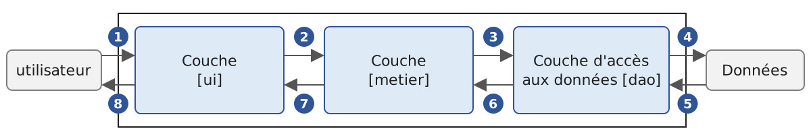
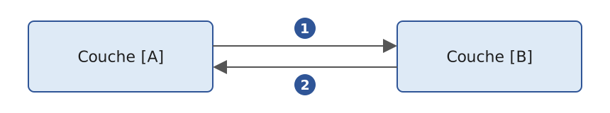
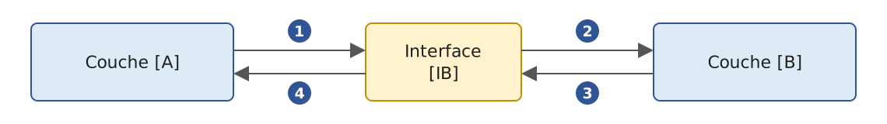
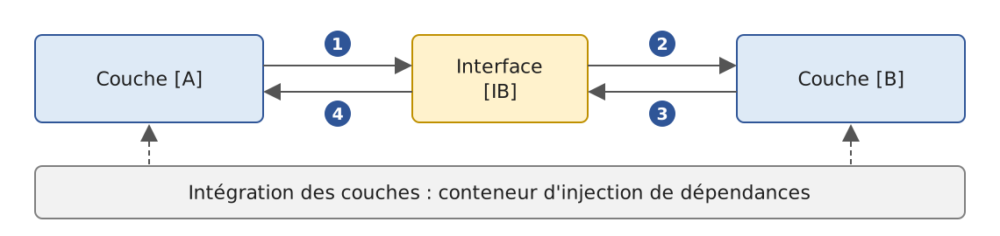
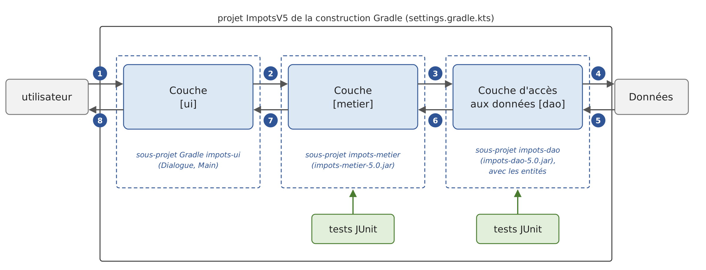
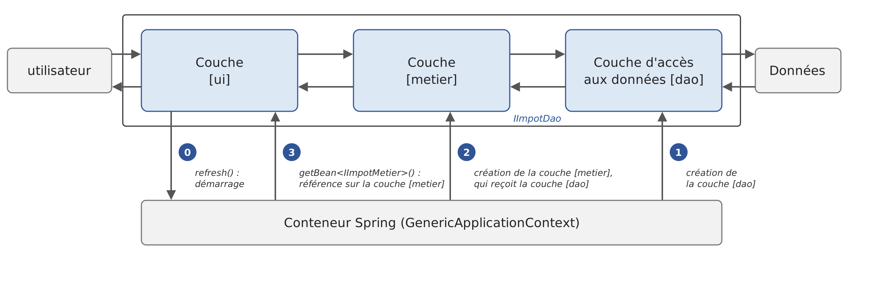

6. Architectures en couches
6.1. Introduction
Revenons sur la dernière version de l'application de calcul de l'impôt (version 3, chapitre 5). Réduit à l'essentiel, son programme principal avait la structure suivante (schéma simplifié) :
Ce programme mêle trois traitements que l'on retrouve dans la plupart des applications :
- la récupération de données mémorisées dans des fichiers, des bases de données, etc. : lignes 1-9 ;
- le dialogue avec l'utilisateur : lignes 13-14 (saisies) et 17 (affichages) ;
- l'utilisation d'un algorithme métier, le calcul de l'impôt : ligne 17. Ce calcul était fait par la classe abstraite [AbstractImpot], mère de [FileImpot] et de [JsonImpot] : dans la version 3, la lecture des données et le calcul sont encore réunis dans un même objet.
La pratique a montré qu'isoler ces différents traitements dans des classes séparées améliore la maintenabilité des applications. L'architecture d'une application ainsi structurée est la suivante :

On appelle cette architecture « architecture trois tiers », traduction de l'anglais « three-tier architecture ». Le terme « tiers » désigne normalement une partie de l'application qui s'exécute sur une machine différente. Lorsque les parties sont sur une même machine, on parle plutôt d'architecture en couches (« layered architecture ») :
- la couche [metier] contient les règles métier de l'application. Pour notre application, ce sont les règles qui permettent de calculer l'impôt d'un contribuable. Cette couche a besoin de données pour travailler :
- les tranches d'impôt, des données qui changent chaque année ;
- le nombre d'enfants, le statut marital et le salaire annuel du contribuable ;
- la couche d'accès aux données ou [dao] (DAO = Data Access Object) fournit les données déjà enregistrées dans des fichiers ou des bases de données. C'est le cas ici des tranches d'impôt, comme dans la version 3 de l'application ;
- la couche d'interface avec l'utilisateur ou [ui] (UI = User Interface) fournit les données saisies par l'utilisateur et lui affiche les résultats. C'est le cas ici du nombre d'enfants, du statut marital et du salaire annuel du contribuable.
De façon générale :
- la couche [dao] s'occupe de l'accès aux données persistantes (fichiers, bases de données) ou non persistantes (réseau, capteurs, etc.) ;
- la couche [ui] s'occupe des interactions avec l'utilisateur, s'il y en a un ;
- les trois couches sont rendues indépendantes les unes des autres grâce à l'utilisation d'interfaces.
Nous allons reprendre l'application [Impots] déjà étudiée à plusieurs reprises pour lui donner une architecture en couches. Auparavant, il nous faut définir les interfaces des différentes couches de l'application.
6.2. Les interfaces de l'application [Impots]
Rappelons qu'une interface définit un ensemble de signatures de fonctions et de propriétés. Les classes qui implémentent l'interface leur donnent un contenu.
Revenons à l'architecture en couches de notre application :
Dans ce type d'architecture, c'est souvent l'utilisateur qui prend les initiatives. Il fait une demande en [1] et reçoit une réponse en [8]. On appelle cela le cycle demande-réponse. Prenons l'exemple du calcul de l'impôt d'un contribuable. Celui-ci va nécessiter plusieurs étapes :
- la couche [ui] demande à l'utilisateur son statut marital, son nombre d'enfants et son salaire annuel. C'est l'opération [1] ci-dessus ;
- ceci fait, la couche [ui] demande à la couche [metier] de calculer l'impôt. Pour cela, elle lui transmet les données qu'elle a reçues de l'utilisateur. C'est l'opération [2] ;
- la couche [metier] a besoin de certaines informations pour mener à bien son travail : les tranches d'impôt. Elle les demande à la couche [dao] par le chemin [3, 4, 5, 6] : [3] est la demande initiale et [6] la réponse à cette demande ;
- ayant toutes les données dont elle avait besoin, la couche [metier] calcule l'impôt ;
- la couche [metier] peut maintenant répondre à la demande faite par la couche [ui] en [2]. C'est le chemin [7] ;
- la couche [ui] met en forme ce résultat puis le présente à l'utilisateur. C'est le chemin [8] ;
- on pourrait imaginer que l'utilisateur fasse des simulations d'impôt et qu'il veuille les mémoriser. Il utiliserait le même chemin [1-8] pour le faire.
On voit dans cette description qu'une couche utilise les ressources de la couche qui est à sa droite, jamais celles de la couche qui est à sa gauche. Considérons deux couches contiguës :

La couche [A] fait des demandes à la couche [B]. Dans les cas les plus simples, une couche est implémentée par une unique classe. Mais une application évolue au cours du temps, et la couche [B] peut avoir successivement des classes d'implémentation différentes [B1], [B2], etc. Si la couche [B] est la couche [dao], elle peut avoir une première implémentation [B1] qui va chercher les données dans un fichier. Quelques années plus tard, on peut vouloir mettre ces données dans une base de données : on construit alors une seconde classe d'implémentation [B2]. Si, dans l'application initiale, la couche [A] travaillait directement avec la classe [B1], on est obligé de réécrire en partie le code de la couche [A]. Supposons par exemple qu'on ait écrit dans la couche [A] quelque chose comme :
- ligne 1 : une instance de la classe [B1] est créée ;
- ligne 3 : des données sont demandées à cette instance.
Si la nouvelle classe d'implémentation [B2] a des fonctions de même signature que la classe [B1], il faudra changer tous les [B1] en [B2]. C'est le cas le plus favorable, et il est assez improbable si on n'a pas prêté attention à ces signatures. Dans la pratique, il est fréquent que les classes [B1] et [B2] n'aient pas les mêmes signatures de fonctions, et donc qu'une bonne partie de la couche [A] doive être réécrite.
On améliore les choses en plaçant une interface entre les couches [A] et [B]. On fige ainsi dans une interface les signatures des fonctions que la couche [B] présente à la couche [A]. Le schéma précédent devient le suivant :

La couche [A] ne s'adresse plus directement à la couche [B] mais à son interface [IB]. Dans le code de la couche [A], la classe d'implémentation [Bi] de la couche [B] n'apparaît plus qu'une fois, au moment de la création de l'objet qui implémente l'interface [IB]. Ensuite, c'est l'interface [IB] et non sa classe d'implémentation qui est utilisée. Le code précédent devient :
- ligne 1 : une instance [ib] implémentant l'interface [IB] est créée par instanciation de la classe [B1]. Le type de la variable est déclaré explicitement : sans lui, l'inférence de types donnerait à [ib] le type [B1] ;
- ligne 3 : des données sont demandées à l'instance [ib].
Désormais, si on remplace l'implémentation [B1] de la couche [B] par une implémentation [B2] et que ces deux implémentations respectent la même interface [IB], seule la ligne 1 de la couche [A] doit être modifiée. C'est un grand avantage qui, à lui seul, justifie l'usage systématique d'interfaces entre deux couches.
On peut aller encore plus loin et rendre la couche [A] totalement indépendante de la couche [B]. Dans le code ci-dessus, la ligne 1 pose problème parce qu'elle nomme en dur la classe [B1]. L'idéal serait que la couche [A] reçoive une implémentation de l'interface [IB] sans avoir à nommer de classe. Ce serait cohérent avec le schéma ci-dessus : la couche [A] s'adresse à l'interface [IB], et on ne voit pas pourquoi elle aurait besoin de connaître le nom de la classe qui implémente cette interface.
C'est ce que permet l'injection de dépendances (« Dependency Injection », DI). L'architecture précédente évolue de la façon suivante :

Un composant transversal, le conteneur d'injection de dépendances, crée les objets qui implémentent les couches et les relie entre eux : il passe à la couche [A] une référence sur l'objet qui implémente la couche [B]. Le code de la couche [A] prend alors la forme suivante :
- ligne 2 : la couche [A] reçoit par son constructeur primaire une instance [ib] qui implémente l'interface [IB]. Le mot clé [val] devant le paramètre en fait une propriété privée de la classe : là où Java a besoin d'un champ, d'un constructeur et d'une affectation, Kotlin se contente d'une ligne. Ce n'est pas la couche [A] qui crée cette instance mais le conteneur ;
- ligne 6 : des données sont demandées à l'instance [ib].
La classe d'implémentation [B1] n'apparaît plus nulle part dans le code de la couche [A]. Lorsque l'implémentation [B1] sera remplacée par une nouvelle implémentation [B2], rien ne changera dans le code de la couche [A] : seul changera l'endroit, unique dans l'application, où l'on indique au conteneur quelle classe implémente [IB]. Cet endroit peut même lire le nom de l'implémentation à utiliser dans un fichier de configuration.
Sur la JVM, l'injection de dépendances a été popularisée au début des années 2000 par le cadriciel (« framework ») Spring, dont la configuration s'écrivait alors dans des fichiers XML. Spring Framework, aujourd'hui dans sa version 7, reste la référence, et il traite Kotlin en langage de premier plan : il fournit des extensions Kotlin à son API, et Kotlin est l'un des deux langages de sa documentation. Il est à la base de Spring Boot, que nous utiliserons au chapitre 13 « Services web ». C'est son conteneur que nous utiliserons dans la version 5 de l'application (il en existe d'autres : CDI, la norme de Jakarta EE, Google Guice, ou, propres à Kotlin, Koin et Kodein). Le couple « interfaces + injection de dépendances » apporte une amélioration décisive à la maintenance des applications en rendant leurs couches étanches entre elles.
Revenons à l'architecture en couches de notre application. Dans les cas simples, on peut partir de la couche [metier] pour découvrir les interfaces de l'application. Pour travailler, elle a besoin de données :
- déjà disponibles dans des fichiers, des bases de données ou via le réseau. Elles sont fournies par la couche [dao] ;
- pas encore disponibles. Elles sont alors fournies par la couche [ui], qui les obtient auprès de l'utilisateur.
Quelle interface la couche [dao] doit-elle offrir à la couche [metier] ? La couche [dao] doit fournir à la couche [metier] les tranches d'impôt. Dans notre application, la couche [dao] exploite des données existantes mais n'en crée pas de nouvelles. Son interface peut être la suivante :
- ligne 1 : l'interface est placée dans le paquetage [dao]. Comme nous le verrons, nous rangerons le fichier [IImpotDao.kt] dans un dossier [dao] ;
- ligne 9 : l'interface [IImpotDao] déclare la propriété [tranchesImpot], qui fournit les tranches d'impôt à la couche [metier]. Une interface Kotlin peut déclarer des propriétés, et pas seulement des fonctions : une propriété [val] d'interface est abstraite, chaque classe d'implémentation dit comment elle obtient sa valeur. Là où Java exposait une donnée en lecture seule par une méthode [getTranchesImpot()], selon la convention des JavaBeans, Kotlin déclare ce qu'elle est : une propriété en lecture seule. Vue de Java, cette propriété est d'ailleurs une méthode [getTranchesImpot()] ;
- les tranches sont rendues sous la forme d'une liste [List<TrancheImpot>] plutôt que d'un tableau. En Kotlin, [List] est une interface en lecture seule : elle n'a pas de fonctions [add], [set] ou [remove], qui appartiennent à l'interface [MutableList] (chapitre 5). Celui qui reçoit la liste ne peut donc pas la modifier, alors que les éléments d'un tableau peuvent toujours être modifiés par celui qui le reçoit ;
- ligne 3 : importe le type [TrancheImpot], défini dans le paquetage [entites] :
Une tranche d'impôt est représentée par une classe de données ([data class], chapitre 4), l'équivalent Kotlin du record de Java. Le compilateur génère à partir des paramètres du constructeur primaire les propriétés [limite], [coeffR] et [coeffN], ainsi que les fonctions [equals], [hashCode], [toString], [copy] et [component1]…[component3] (pour la déstructuration). On écrit [TrancheImpot(limite, coeffR, coeffN)] pour créer une tranche. Les propriétés sont déclarées [val] : une tranche ne peut plus changer une fois créée (une classe de données peut avoir des propriétés [var], mais ce n'est pas l'usage). Les trois propriétés sont de type [BigDecimal], la classe Java des nombres décimaux exacts, que Kotlin utilise directement : un [Double] ne sait pas représenter exactement 0,068 ou 291,09. Comme un [BigDecimal] est lui-même non modifiable, une tranche est complètement immuable. Une classe avec des propriétés [var] aurait permis de la modifier ; nous verrons que cette impossibilité supprime un effet de bord d'une ancienne façon d'écrire la couche [metier].
Quelle interface la couche [metier] doit-elle présenter à la couche [ui] ? Rappelons les interactions entre ces deux couches :
- la couche [ui] demande à l'utilisateur son statut marital, son nombre d'enfants et son salaire annuel. C'est l'opération [1] du schéma ;
- ceci fait, la couche [ui] demande à la couche [metier] de calculer l'impôt. Pour cela, elle lui transmet les données qu'elle a reçues de l'utilisateur. C'est l'opération [2].
L'interface de la couche [metier] peut être la suivante :
- ligne 1 : tout ce qui concerne la couche [metier] est placé dans le paquetage [metier] ;
- ligne 6 : l'interface [IImpotMetier] ne déclare qu'une fonction, celle qui calcule l'impôt d'un contribuable à partir de son statut marital, de son nombre d'enfants et de son salaire annuel. Une fonction d'interface sans corps est abstraite, et, comme tout membre Kotlin sans modificateur de visibilité, publique : il est inutile d'écrire [public abstract]. Le résultat est un [Int] : l'impôt en euros, sans les centimes.
Nous étudions maintenant une première implémentation de cette architecture en couches.
6.3. Application exemple - version 4
6.3.1. Le projet
La version 4 est un programme formé de plusieurs fichiers sources, qui n'utilise aucune bibliothèque externe. Kotlin n'a pas d'équivalent simple du lanceur de code source de Java ([java Main.java]), qui compile en mémoire un programme de plusieurs fichiers et l'exécute : un programme Kotlin de plusieurs fichiers est compilé avant d'être exécuté. Nous en faisons donc un projet Gradle, [ImpotsV4], l'un des sous-projets de la construction Gradle du chapitre (chapitre 2). Le dossier [06-architectures] réunit en effet tous les projets du chapitre ; son fichier [settings.gradle.kts] les énumère :
- lignes 3-6 : le plugin qui permet à Gradle de télécharger lui-même le JDK 25 s'il ne le trouve pas sur le poste (chapitre 2) ;
- ligne 8 : le nom du projet racine ;
- ligne 11 : les cinq sous-projets du chapitre. Un sous-projet est désigné par son chemin, dont les éléments sont séparés par des deux-points : [ImpotsV5:impots-dao] est le sous-projet du dossier [ImpotsV5/impots-dao]. Nous présenterons [TestsDemo] et les trois sous-projets de la version 5 plus loin.
Le fichier [build.gradle.kts] du projet racine déclare les greffons (« plugins ») utilisés par les sous-projets, avec leur version, sans les appliquer :
- ligne 4 : le greffon Kotlin pour la JVM, version 2.4.20. La mention [apply false] le rend disponible pour les sous-projets, qui l'appliqueront sans répéter sa version ;
- ligne 5 : un greffon du compilateur Kotlin dont la version 5 aura besoin pour Spring. Nous l'expliquerons le moment venu.
Le sous-projet [ImpotsV4] a l'arborescence suivante. Chaque couche y occupe un dossier :
- le dossier [entites] contient les types transversaux aux couches [ui], [metier] et [dao] : la classe de données [TrancheImpot], l'exception [ImpotException] et l'énumération [CodeErreur] de ses codes d'erreur ;
- le dossier [dao] contient l'interface et les classes de la couche [dao]. Nous utiliserons deux implémentations de l'interface [IImpotDao] : la classe [HardwiredImpot], dont les données sont écrites dans le code (version 2), et la classe [FileImpot], qui lit les données dans un fichier texte (version 3). La lecture d'un fichier JSON, l'autre possibilité de la version 3, sera reprise dans la version 5 ;
- le dossier [metier] contient l'interface et la classe de la couche [metier] ;
- le dossier [ui] contient la classe de la couche [ui] ;
- le fichier [Main.kt] crée les couches et les relie entre elles ;
- le fichier [DataImpot.txt] contient les tranches d'impôt lues par l'implémentation [FileImpot] de la couche [dao]. Il est à la racine du sous-projet, qui est le dossier courant du programme lancé par Gradle.
En Java, le nom des dossiers a de l'importance : une classe du paquetage [dao] se trouve obligatoirement dans un dossier [dao]. Kotlin est plus souple : le paquetage est celui que déclare la directive [package] du fichier, quel que soit le dossier où il se trouve. La convention, que suivent IntelliJ IDEA et ce cours, reste pourtant de ranger les fichiers dans des dossiers qui reproduisent les paquetages : un fichier du paquetage [impots.dao] dans un dossier [impots/dao] (on omet seulement, dans un projet dont tous les paquetages commencent par la même racine, les dossiers de cette racine commune). Les fichiers [.class] produits par le compilateur, eux, sont toujours rangés selon leur paquetage : c'est ainsi que la machine virtuelle retrouve les classes à partir de leur nom complet.
Le fichier [Main.kt] n'a pas de directive [package] : il appartient au paquetage racine, sans nom. Sa fonction [main] est compilée dans la classe [MainKt], nom que le fichier de construction du sous-projet donne au greffon [application] :
- lignes 2-4 : le sous-projet applique le greffon Kotlin, sans version (elle est donnée par le projet racine), et le greffon [application], qui ajoute la tâche [run] ;
- lignes 7-8 : les coordonnées du projet ;
- lignes 14-21 : la configuration du compilateur, la même que dans les chapitres précédents ;
- lignes 25-27 : la classe principale, [MainKt], sans nom de paquetage. Il n'y a qu'un programme dans ce sous-projet : la propriété [main] des chapitres précédents est inutile ;
- lignes 30-32 : le programme lit le clavier ;
- lignes 35-38 : les programmes lancés par Gradle écrivent leurs sorties en UTF-8, pour que les caractères accentués s'affichent correctement sous Windows (chapitre 2).
Contrairement à Java, Kotlin permet d'importer une déclaration du paquetage racine depuis un autre paquetage, en la nommant sans préfixe ([import nomDeLaDeclaration]). L'usage reste de n'y placer que le programme principal, que personne n'importe.
On exécute le programme depuis le dossier du chapitre par [gradlew -q :ImpotsV4:run] : le chemin [:ImpotsV4] désigne le sous-projet, et la tâche [run] s'exécute avec le dossier du sous-projet comme dossier courant. IntelliJ IDEA ouvre le dossier [06-architectures] comme un projet Gradle et exécute [Main.kt] par le triangle vert placé devant sa fonction [main].
6.3.2. Les entités de l'application

Nous appelons entités les types transversaux aux couches. Ce sont en général les classes qui encapsulent les données de la couche [dao]. Ces entités remontent en général jusqu'à la couche [ui]. Les entités de l'application sont la classe de données [TrancheImpot], déjà présentée, et l'exception [ImpotException], accompagnée de l'énumération de ses codes d'erreur :
- ligne 4 : une énumération ([enum class]). Comme en Java, les valeurs d'une énumération sont des objets, instances uniques de la classe [CodeErreur], et une énumération peut avoir des propriétés et des fonctions ;
- ligne 5 : les cinq codes d'erreur. Le point-virgule qui termine la liste est obligatoire lorsque d'autres membres la suivent. La propriété [ordinal], héritée de la classe [Enum], rend la position de la valeur dans la liste : 0 pour [ACCES], 4 pour [CHAMP3] ;
- lignes 8-9 : à chaque code est associé un bit. [bit] est une propriété calculée : elle n'a pas de champ, son accesseur [get()] la calcule à chaque lecture. Kotlin n'a pas d'opérateurs de décalage : [1 shl ordinal] (« shift left ») est l'équivalent du [1 << ordinal] de Java, et vaut 1, 2, 4, 8 et 16. Ces puissances de 2 peuvent se combiner avec la fonction infixe [or] (le [|] de Java) : le code [CHAMP2.bit or CHAMP3.bit] (8 + 16 = 24) signifie que les champs 2 et 3 d'une ligne sont incorrects. Le code d'erreur de l'exception reste un simple entier, que toutes les implémentations de la couche [dao] pourront utiliser ;
- lignes 11-14 : la fonction [noms] rend les noms des codes présents dans une combinaison de bits : « CHAMP2, CHAMP3 » pour 24. Elle n'utilise aucune valeur particulière de l'énumération : elle est placée dans l'objet compagnon, et s'appelle comme une méthode statique de Java, [CodeErreur.noms(24)]. La propriété [entries] (Kotlin 1.9) est la liste des valeurs de l'énumération ; elle remplace la fonction [values()], qui crée un nouveau tableau à chaque appel. [(code and it.bit) != 0] est vrai si le bit de la valeur [it] est présent dans [code] ([and] est le [&] de Java). Les valeurs retenues par [filter] sont ensuite assemblées par [joinToString], avec le séparateur [", "] et une lambda qui rend le nom ([name]) de chaque valeur. Le corps de la fonction est une expression : la fonction n'a pas d'accolades, son résultat suit le signe [=].
- ligne 5 : une exception propre à l'application dérive de la classe [RuntimeException]. En Kotlin, la question du choix entre exception contrôlée et non contrôlée ne se pose pas : le langage n'a pas d'exceptions contrôlées (chapitre 3), aucune fonction ne déclare les exceptions qu'elle lance, et aucun appelant n'est obligé de les intercepter. Dériver de [RuntimeException] plutôt que d'[Exception] reste l'usage, car c'est ainsi qu'une exception est vue de façon cohérente depuis du code Java ;
- lignes 6-10 : le constructeur primaire a trois paramètres. [message] et [cause] sont de simples paramètres, transmis au constructeur de la classe parent (ligne 11) ; [code], déclaré [val], est en outre une propriété en lecture seule de l'exception. La cause, l'exception d'origine s'il y en a une, sera accessible par la propriété [cause] héritée de [Throwable] ;
- lignes 8-10 : grâce aux valeurs par défaut des paramètres, ce constructeur unique remplace les deux constructeurs de la version Java, l'un avec un message et un code, l'autre avec en plus la cause. Avec les arguments nommés, on écrit [ImpotException(message, code = 2)] quand il n'y a pas de cause, et [ImpotException(message, e, 1)] quand il y en a une ;
- ligne 10 : la virgule après le dernier paramètre (« trailing comma ») est permise ; elle facilite l'ajout d'un paramètre ;
- une exception est sérialisable (la classe [Throwable] implémente l'interface [Serializable]). La version Java déclarait un champ [serialVersionUID] pour éviter un avertissement de [javac -Xlint:all] ; le compilateur Kotlin n'émet pas cet avertissement, et nous ne déclarons pas ce champ.
Dans cette version, seule la classe [FileImpot] de la couche [dao] lance des [ImpotException].
6.3.3. La couche [dao]
Rappelons l'interface de la couche [dao] :
Nous implémentons cette interface de deux façons différentes. Tout d'abord avec la classe [HardwiredImpot] :
- ligne 6 : la classe [HardwiredImpot] implémente l'interface [IImpotDao]. En Kotlin, le deux-points sert aussi bien pour l'héritage d'une classe que pour l'implémentation d'une interface : il n'y a pas de mot clé [implements]. On remarquera que l'interface est nommée sans parenthèses, alors qu'une classe parent l'est avec les arguments de son constructeur ([RuntimeException(message, cause)]) : une interface n'a pas de constructeur ;
- lignes 9-16 : l'implémentation de la propriété de l'interface. Le mot clé [override] est obligatoire : le compilateur vérifie que la propriété implémente bien un membre de l'interface, comme l'annotation facultative [@Override] de Java. La propriété est initialisée dans sa déclaration par [listOf], qui crée une liste en lecture seule. Là encore, la virgule après le dernier élément est permise ;
- lignes 20-22 : une fonction privée qui crée une tranche à partir de trois chaînes. Elle est déclarée au niveau du fichier, hors de la classe : [private] la rend visible du seul fichier [HardwiredImpot.kt]. La fonction d'extension [toBigDecimal] de la bibliothèque standard convertit une chaîne en [BigDecimal] ; c'est le constructeur [BigDecimal(String)]. Un [BigDecimal] construit à partir d'une chaîne est exact : ["0.068".toBigDecimal()] vaut exactement 0,068, alors qu'un [BigDecimal] construit à partir d'un [Double] hérite de son imprécision : [0.068.toBigDecimal()], qui passe par la conversion du [Double] en chaîne, donne bien 0,068, mais [(0.1 + 0.2).toBigDecimal()] donne 0,30000000000000004. Le type du résultat de la fonction, [TrancheImpot], est inféré de l'expression qui suit le signe [=].
L'interface [IImpotDao] est également implémentée par la classe [FileImpot], qui lit les tranches d'impôt dans un fichier texte. Le fichier [DataImpot.txt] est le suivant :
Chaque ligne décrit une tranche sous la forme [limite:coeffR:coeffN]. Les nombres sont écrits avec un point décimal, quelle que soit la langue du système : le fichier est ainsi lisible sur toutes les machines. Les valeurs sont celles du barème 2004 sur les revenus 2003, conservées telles quelles : il s'agit d'un exercice. La classe [FileImpot] est la suivante :
- lignes 3-7 : Kotlin n'a pas d'importation statique ([import static] de Java) : la directive [import] ordinaire importe aussi bien une classe qu'une valeur d'énumération ou une fonction. On écrit ensuite [CHAMP1] au lieu de [CodeErreur.CHAMP1] ;
- lignes 13-15 : les fonctions du paquetage [kotlin.io.path] (chapitre 5), qui complètent l'API NIO de Java ;
- ligne 19 : le constructeur primaire reçoit le nom du fichier des tranches d'impôt. Déclaré [val], ce paramètre est aussi une propriété publique en lecture seule, [fileName] : elle remplace le champ et la méthode [getFileName] de la version Java ;
- ligne 22 : la propriété de l'interface. Elle n'est pas initialisée dans sa déclaration : le compilateur vérifie qu'elle reçoit une valeur, une seule fois, dans le bloc [init] qui suit ;
- lignes 24-39 : le bloc [init] est exécuté à la construction de l'objet. Il lit le fichier puis en extrait les tranches ;
- lignes 26-34 : en Kotlin, [try] est une expression : sa valeur est celle de la dernière expression du bloc [try], ici la liste des lignes du fichier, ou celle du bloc [catch]. Le bloc [catch] lance une exception : son type est [Nothing], le type des expressions qui ne rendent jamais de valeur, et la variable [lignes] a le type [List<String>] ;
- ligne 27 : la fonction [Path] de [kotlin.io.path] crée le chemin du fichier ; elle équivaut à [Path.of]. Un chemin relatif l'est au dossier courant ;
- lignes 28-29 : si le fichier n'existe pas, on lance une [NoSuchFileException] (paquetage [java.nio.file]) avec un message en français. Son constructeur à trois paramètres reçoit le nom du fichier, celui d'un éventuel second fichier (ici [null]) et la raison de l'erreur. Les messages des exceptions du JDK sont en anglais : sans ce test, la lecture lancerait elle-même une [NoSuchFileException] dont le message serait le seul nom du fichier ;
- ligne 31 : la fonction d'extension [readLines] lit le fichier en entier, en UTF-8, et rend la liste de ses lignes. Elle ouvre et ferme elle-même le fichier. Pour un gros fichier, on préférerait une lecture au fil de l'eau avec [useLines] ;
- lignes 32-34 : toutes les erreurs d'entrée-sortie dérivent de [IOException] : fichier absent ([NoSuchFileException]), droits insuffisants ([AccessDeniedException]), fichier qui n'est pas en UTF-8 ([MalformedInputException]), etc. L'erreur est encapsulée dans une [ImpotException] de code [ACCES] ; l'exception d'origine est conservée comme cause (deuxième argument) ;
- lignes 37-39 : la lecture des lignes et leur analyse sont séparées, ce qui n'était pas le cas en Java. [withIndex] associe à chaque ligne son indice (à partir de 0) dans un objet [IndexedValue] de propriétés [index] et [value] ; [filter] écarte les lignes vides ou faites d'espaces ([isNotBlank]) sans perdre l'indice des autres ; [map] transforme chacune des lignes restantes en tranche. La lambda de [map] déstructure son paramètre [IndexedValue] en ses deux composantes, [(index, ligne)]. Le numéro de la ligne, [index + 1], et la ligne débarrassée de ses espaces de début et de fin ([trim]) sont passés à la fonction [tranche]. Le résultat de [map] est une [List], en lecture seule ;
- ligne 43 : la fonction qui rend la tranche décrite par une ligne, ou lance une [ImpotException] si la ligne est incorrecte. Cette exception n'est pas une [IOException] : elle remonte telle quelle à l'appelant ;
- ligne 45 : la ligne est découpée par [split] avec l'expression régulière [SEPARATEUR] : le séparateur est un caractère deux-points, éventuellement entouré d'espaces. Attention : en Kotlin, [split(":")] avec une chaîne découpe sur la chaîne elle-même, sans l'interpréter comme une expression régulière ; il faut passer un objet [Regex] pour cela ;
- lignes 46-47 : une ligne qui n'a pas trois champs est incorrecte. Le code d'erreur est passé par un argument nommé, [code = LIGNE.bit] : il n'y a pas de cause, et le paramètre [cause] garde sa valeur par défaut, [null] ;
- ligne 50 : conversion des trois champs. [champs.map(::nombre)] applique la fonction [nombre] à chaque champ ([::nombre] est une référence de fonction, chapitre 7) et rend une liste de trois [BigDecimal?], que la déclaration déstructurante répartit dans trois variables ;
- lignes 51-57 : si un champ est incorrect, chaque champ incorrect ajoute son bit au code d'erreur avec la fonction infixe [or], et une [ImpotException] est lancée. Son message donne le numéro et le contenu de la ligne ;
- ligne 60 : à cet endroit, le compilateur sait que [limite], [coeffR] et [coeffN] ne sont pas [null], sinon le [if] précédent aurait lancé une exception. Par transtypage intelligent (« smart cast »), ces variables de type [BigDecimal?] sont traitées comme des [BigDecimal], le type qu'attend le constructeur de [TrancheImpot] : ni [!!] ni conversion ne sont nécessaires ;
- lignes 65-66 : les deux expressions régulières sont créées une fois pour toutes, dans l'objet compagnon, et non à chaque appel. Elles sont écrites dans des chaînes brutes (["""..."""]), où la barre oblique inverse n'a pas à être doublée : [\s*] désigne zéro ou plusieurs espaces ;
- lignes 69-70 : la conversion d'un champ en [BigDecimal]. [NOMBRE.matches(champ)] vérifie que la chaîne entière respecte l'expression régulière [\d+(\.\d+)?] : un ou plusieurs chiffres, éventuellement suivis d'un point et d'autres chiffres. Ainsi « 0,191 » est refusé, de même qu'un nombre négatif. La fonction [toBigDecimal] ne dépend pas de la langue de l'utilisateur : elle attend toujours un point décimal. En cas d'erreur, la fonction rend [null], d'où son type [BigDecimal?]. On aurait pu utiliser [toBigDecimalOrNull], qui rend [null] pour une chaîne incorrecte, mais elle accepte aussi « -1 » ou « 1e3 ».
6.3.4. La couche [metier]
Rappelons l'interface de cette couche :
Son implémentation [ImpotMetier] est la suivante :
- ligne 8 : la classe [ImpotMetier] implémente l'interface [IImpotMetier]. La couche [metier] doit collaborer avec la couche [dao] : elle reçoit donc, par son constructeur primaire, une référence [dao] sur l'objet qui implémente l'interface [IImpotDao]. Ce paramètre n'est pas déclaré [val] : il n'est utilisé qu'à la construction de l'objet, et ne devient pas une propriété ;
- ligne 11 : à la construction de l'objet, la couche [metier] demande une fois pour toutes les tranches d'impôt à la couche [dao] et les mémorise dans une propriété privée en lecture seule. Son type, [List<TrancheImpot>], est inféré. On remarquera que la couche [metier] ne connaît la couche [dao] que par son interface [IImpotDao] : elle ignore si les tranches viennent du code, d'un fichier ou, plus tard, d'une base de données ;
- ligne 14 : l'implémentation de la fonction de l'interface, avec le mot clé obligatoire [override] ;
- lignes 16-17 : la couche [metier] ne fait pas confiance à ses appelants. La fonction [require] de la bibliothèque standard (chapitre 3) lance une [IllegalArgumentException] si la condition est fausse ; le message de l'exception est calculé par la lambda, qui n'est exécutée qu'en cas d'erreur. Le message nomme le paramètre incorrect ;
- lignes 19-21 : le nombre de parts. [nbEnfants.toBigDecimal()] convertit l'entier en [BigDecimal]. Une classe Java comme [BigDecimal] n'a pas d'opérateurs arithmétiques, mais la bibliothèque standard de Kotlin lui en ajoute par des fonctions d'extension marquées [operator] (chapitre 4) : [a + b], [a - b] et [a * b] appellent [add], [subtract] et [multiply], et [nbParts += DEMI] s'écrit en Java [nbParts = nbParts.add(DEMI)]. Comme un [BigDecimal] est non modifiable, chaque opération rend un nouvel objet : c'est pourquoi [nbParts] est une variable ([var]). Le nombre d'enfants est multiplié par 0,5 plutôt que divisé par 2, pour la raison donnée plus loin : 3 enfants donnent 1,5 part ;
- lignes 24-25 : le revenu imposable et le quotient familial. La division par le nombre de parts peut avoir un nombre infini de décimales (une division par 3, par exemple) : sans précision indiquée, la méthode [divide] lancerait alors une [ArithmeticException]. [MathContext.DECIMAL128] limite le résultat à 34 chiffres significatifs ;
- ligne 28 : on cherche la première tranche dont la limite est supérieure ou égale au quotient familial, parmi toutes les tranches sauf la dernière ([dropLast(1)]). [firstOrNull] rend le premier élément qui vérifie la condition, ou [null] s'il n'y en a pas ; l'opérateur Elvis [?:] remplace alors [null] par la dernière tranche, [tranches.last()], dont la limite (0) n'est pas utilisée. Les [BigDecimal] implémentent l'interface [Comparable] : Kotlin traduit [qf <= it.limite] en [qf.compareTo(it.limite) <= 0]. Cette ligne remplace la boucle [for] et le [break] de la version Java ;
- ligne 30 : l'impôt. La fonction [toInt()] d'un [BigDecimal] (la méthode [intValue()] de Java) rend la partie entière du résultat ;
- lignes 33-36 : deux constantes, rangées dans un objet compagnon privé. Elles ne peuvent pas être déclarées [const] : seuls les types de base et les chaînes peuvent l'être.
Une remarque sur l'opérateur [/]. La bibliothèque standard définit aussi l'opérateur [/] pour les [BigDecimal], mais il appelle [divide(other, RoundingMode.HALF_EVEN)] : le résultat a le même nombre de décimales que le dividende. Ainsi [3.toBigDecimal() / BigDecimal.TWO] vaut 2, et non 1,5, alors que [3.toBigDecimal().divide(BigDecimal.TWO)] vaut bien 1,5. C'est pourquoi le code ci-dessus évite cet opérateur : il multiplie par 0,5 et appelle explicitement [divide] avec un [MathContext]. Avec les [BigDecimal], mieux vaut toujours savoir ce que fait exactement une division.
Une façon de faire autrefois courante consistait à modifier, avant la recherche, la limite de la dernière tranche (quelque chose comme [tranches[tranches.size - 1].limite = qf + 1]) pour que la boucle de recherche s'arrête toujours. Cette instruction modifiait le tableau fourni par la couche [dao] : un effet de bord sur une donnée partagée par toutes les couches. On ne pourrait plus l'écrire ici : la propriété [limite] d'une [TrancheImpot] est en lecture seule, et la liste qui contient les tranches l'est aussi. Le code moderne prend simplement la dernière tranche quand aucune limite ne convient, sans modifier les données qu'il reçoit.
6.3.5. La couche [ui]
Dans les versions 2 et 3, le dialogue avec l'utilisateur était écrit dans le programme principal, à la suite de la création de l'objet de calcul. Seule différait la façon de créer cet objet. Nous isolons maintenant ce dialogue dans la couche [ui], qui ne connaît la couche [metier] que par son interface :
- ligne 6 : le dialogue n'a pas d'état propre. En Java, on en faisait une classe [final] à constructeur privé, ne contenant que des membres statiques. Kotlin a pour cela la déclaration d'objet ([object], chapitre 4) : [Dialogue] est à la fois une classe et son unique instance, créée au premier usage. On appelle ses fonctions comme des méthodes statiques : [Dialogue.run(metier)] ;
- lignes 9-10 : la question posée à l'utilisateur, une constante ([const val]) privée ;
- lignes 13-18 : le message d'aide est une chaîne brute, délimitée par trois guillemets. Elle peut s'étendre sur plusieurs lignes ; [trimIndent] (chapitre 5) retire l'indentation commune des lignes, ainsi que la première et la dernière ligne si elles sont vides : le texte ne commence ni ne se termine par un passage à la ligne. Le résultat de [trimIndent] est calculé à l'exécution : la chaîne ne peut pas être déclarée [const] ;
- ligne 24 : la fonction [run] reçoit la couche [metier] sous la forme de son interface [IImpotMetier]. Elle ignore tout de la classe qui l'implémente et de la couche [dao] ;
- lignes 27-28 : la question est affichée par [print], sans passage à la ligne, puis [readlnOrNull] lit une ligne au clavier. Elle rend [null] à la fin du flux d'entrée ; l'appel sûr [?.trim()] rend alors lui aussi [null], que l'opérateur Elvis remplace par la chaîne vide : une fin de flux arrête le dialogue comme une ligne vide ;
- ligne 34 : la ligne saisie est découpée sur les espaces ; l'expression régulière [\s+] (un ou plusieurs espaces) ignore les espaces multiples ;
- lignes 40-41 : en Kotlin, l'opérateur [] (et [!=]) compare le contenu des chaînes : il appelle [equals]*. C'est l'opérateur *[=] qui compare des références. Le piège de Java, où [==] compare des références, n'existe pas ;
- lignes 46-54 : le nombre d'enfants et le salaire doivent être des entiers positifs ou nuls. [toIntOrNull] rend [null] si le champ n'est pas un entier, et l'opérateur Elvis remplace alors [null] par -1. Un nombre négatif et une saisie incorrecte sont ainsi refusés par le même test. La méthode [entier] de la version Java, avec son [try]/[catch] de [NumberFormatException], est devenue inutile ;
- ligne 58 : les paramètres sont corrects : le calcul est demandé à la couche [metier]. L'appel est écrit directement dans le gabarit de chaîne, entre [${...}].
6.3.6. L'intégration des couches
Il reste à créer les couches et à les relier entre elles. C'est le rôle du programme principal [Main.kt] :
- lignes 1-9 : le fichier n'a pas de directive [package] ; ses importations nomment les classes des quatre autres paquetages ;
- ligne 14 : la fonction [main] reçoit les arguments de la ligne de commande dans le tableau [args]. L'argument choisit l'implémentation de la couche [dao] : [hardwired] pour la classe [HardwiredImpot], sinon le nom du fichier lu par la classe [FileImpot], [DataImpot.txt] par défaut ;
- ligne 15 : [firstOrNull] rend le premier argument, ou [null] s'il n'y en a pas, que l'opérateur Elvis remplace par le nom du fichier par défaut ;
- ligne 16 : la variable [metier] est initialisée par une expression [try]. Son type est déclaré : c'est l'interface [IImpotMetier], et non la classe [ImpotMetier] que donnerait l'inférence ;
- ligne 18 : création de la couche [dao]. [if] est une expression : sa valeur est l'une ou l'autre des deux implémentations. C'est le seul endroit du programme où les classes [HardwiredImpot] et [FileImpot] sont nommées ;
- ligne 20 : création de la couche [metier], qui reçoit la couche [dao]. C'est la dernière expression du bloc [try], donc sa valeur ;
- lignes 21-26 : la création de la couche [dao] peut lancer une [ImpotException]. On affiche alors l'erreur, avec le message de l'exception d'origine s'il y en a une, et le programme s'arrête avec le code de sortie 1. Le code d'erreur est affiché en clair grâce à la fonction [CodeErreur.noms]. Si [e.cause] n'est pas [null], [let] construit la mention de l'exception d'origine ; sinon, l'opérateur Elvis donne la chaîne vide ;
- ligne 26 : la fonction [exitProcess] de la bibliothèque standard appelle [System.exit]. Son type de retour est [Nothing] : le compilateur sait qu'elle ne rend jamais la main, et donc que le bloc [catch] ne produit aucune valeur. L'expression [try] a ainsi le type [IImpotMetier]. La version Java devait ajouter une instruction [return] jamais exécutée après [System.exit(1)], pour que le compilateur admette que la variable [metier] était initialisée ;
- ligne 30 : les couches sont prêtes : la couche [ui] dialogue avec l'utilisateur.
6.3.7. Exécutions
Depuis le dossier du chapitre, avec le fichier [DataImpot.txt] (implémentation [FileImpot]), et en testant la validation des saisies (dans les résultats de ce chapitre, les saisies de l'utilisateur ont été fournies au programme par une redirection de l'entrée, puis replacées à la suite des questions, là où l'utilisateur les tape) :
Avec l'implémentation [HardwiredImpot]. Les arguments du programme sont passés par l'option [--args] de la tâche [run] :
Avec un fichier qui n'existe pas :
Le code d'erreur est [ACCES], et le message de l'exception d'origine, la [NoSuchFileException], est affiché : il est formé du nom du fichier, suivi de la raison donnée à son constructeur. Le programme se termine avec le code de sortie 1 : Gradle signale alors l'échec de la tâche [run] par quelques lignes supplémentaires, que nous ne reproduisons pas.
Avec le fichier [DataImpotInvalide.txt] suivant, dont la ligne 3 est écrite avec des virgules décimales :
on obtient :
Les champs 2 et 3 de la ligne 3 sont incorrects : le code d'erreur combine les bits [CHAMP2] et [CHAMP3], et la fonction [CodeErreur.noms] l'affiche sous la forme « CHAMP2, CHAMP3 ».
6.3.8. Conclusion
L'architecture en couches et l'utilisation d'interfaces ont apporté une certaine souplesse à notre application. Elle apparaît dans la façon dont le programme principal crée les couches [dao] et [metier] :
Changer l'implémentation de la couche [dao] ne change que la ligne 2. Une fois les couches créées, le code de la couche [ui] est le même dans les deux cas : la couche [metier] y est manipulée au travers de son interface [IImpotMetier], et non au travers de sa classe d'implémentation.
La même souplesse apparaît dans la couche [metier] : elle est construite à partir d'une référence sur l'interface de la couche [dao]. Changer l'implémentation de cette dernière n'a donc aucun impact sur la couche [metier]. C'est pourquoi notre unique classe [ImpotMetier] a pu travailler sans modification avec deux implémentations différentes de la couche [dao].
6.4. Application exemple - version 5

Cette nouvelle version reprend la précédente en y apportant les modifications suivantes :
- les couches [dao] et [metier] sont chacune placées dans un sous-projet Gradle qui produit une bibliothèque (un fichier jar), et testées avec le cadriciel de tests unitaires JUnit ;
- la couche [dao] reçoit une troisième implémentation, [JsonImpot], qui lit les tranches d'impôt dans un fichier JSON avec la bibliothèque Jackson ;
- l'intégration des couches est assurée par le conteneur d'injection de dépendances de Spring, et l'implémentation de la couche [dao] est choisie dans un fichier de configuration.
Dans les grands projets, plusieurs développeurs travaillent sur la même application. Les architectures en couches facilitent ce mode de travail : parce que les couches communiquent entre elles au travers d'interfaces bien définies, un développeur qui travaille sur une couche n'a pas à se préoccuper du travail des autres développeurs sur les autres couches. Il suffit que tout le monde respecte les interfaces.
Ainsi, le développeur de la couche [metier] a besoin, pour tester sa couche, d'une implémentation de la couche [dao]. Tant que celle-ci n'est pas terminée, il peut utiliser une implémentation factice de la couche [dao], pourvu qu'elle respecte l'interface [IImpotDao]. C'est là un autre avantage de l'architecture en couches : un retard dans la couche [dao] n'empêche pas de tester la couche [metier]. L'implémentation factice a aussi l'avantage d'être bien plus simple à mettre en œuvre que la véritable couche [dao], qui peut nécessiter un SGBD, des connexions réseau, etc.
Lorsque la couche [dao] est terminée et testée, elle est fournie aux développeurs de la couche [metier] sous la forme d'une bibliothèque (un fichier jar) plutôt que de code source à recopier. Au final, l'application est livrée sous la forme d'un programme principal (celui de la couche [ui]) et de bibliothèques de classes (les autres couches).
6.4.1. Les sous-projets Gradle de la version 5
La version 5 est formée de trois sous-projets de la construction Gradle du chapitre, un par couche, rangés dans le dossier [ImpotsV5]. Les tests ne forment pas un projet séparé : la convention de Gradle (la même que celle de Maven) place les tests d'un sous-projet dans son dossier [src/test/kotlin]. Ils sont compilés et exécutés par Gradle, mais ne font pas partie du fichier jar du sous-projet. On obtient l'arborescence suivante :
Les paquetages sont désormais préfixés par [impots] : [impots.entites], [impots.dao], [impots.metier], [impots.ui]. Les sous-projets [impots-dao] et [impots-metier] seront en effet réutilisés par d'autres projets (chapitres 10 à 13), et deux bibliothèques utilisées par un même programme ne doivent pas définir deux classes de même nom complet. Dans les projets professionnels, on préfixe les paquetages par le nom de domaine inversé de l'organisation ([org.springframework], [tools.jackson]…), ce qui garantit des noms uniques.
Le dossier [ImpotsV5] lui-même n'a pas de fichier de construction : c'est un simple dossier de regroupement, que Gradle traite comme un projet vide, [:ImpotsV5], parent des trois sous-projets [:ImpotsV5:impots-dao], [:ImpotsV5:impots-metier] et [:ImpotsV5:impots-ui] déclarés dans le fichier [settings.gradle.kts] du chapitre. Là où Maven a besoin d'un projet parent pour réunir les modules, Gradle se contente de ce fichier. Chaque sous-projet a son propre fichier [build.gradle.kts], que nous présenterons avec sa couche. Ces fichiers répètent quelques lignes (le dépôt Maven Central, la configuration du compilateur et des tests) ; dans un projet plus important, on factoriserait ces lignes dans un greffon de convention (dossier [buildSrc]) et on réunirait les versions des bibliothèques dans un catalogue de versions ([gradle/libs.versions.toml]).
L'application se construit et se teste par la commande suivante, tapée dans le dossier du chapitre :
Gradle compile chaque sous-projet, compile et exécute ses tests, puis crée son fichier jar dans le dossier [build/libs] du sous-projet, par exemple [ImpotsV5/impots-dao/build/libs/impots-dao-5.0.jar]. Les sous-projets sont traités dans l'ordre imposé par leurs dépendances : [impots-dao], puis [impots-metier], puis [impots-ui]. Si un test échoue, la construction s'arrête. La commande [gradlew :ImpotsV5:impots-metier:build] ne construit que le sous-projet [impots-metier]… et ceux dont il dépend : Gradle sait que [impots-metier] a besoin de [impots-dao], et compile ce dernier d'abord s'il a changé (sans exécuter ses tests). Il n'y a pas, comme avec Maven, de dépôt local à tenir à jour par une commande [install] : à l'intérieur d'une construction, les sous-projets se voient directement.
Les applications des chapitres 10 à 13 réutiliseront les couches de la version 5 sans en recopier le code source. Leur fichier [settings.gradle.kts] inclura la construction du chapitre 6 par une construction composite :
et leurs fichiers [build.gradle.kts] déclareront des dépendances vers [exemples.impots:impots-metier:5.0] et, pour l'objet [Dialogue], [exemples.impots:impots-ui:5.0], comme ils le feraient pour Jackson ou Spring :
Gradle reconnaît dans la construction incluse les sous-projets qui ont ces coordonnées (groupe [exemples.impots], nom du sous-projet, version [5.0]) et les utilise à la place d'une bibliothèque téléchargée : il les construit au besoin, et une modification de la version 5 est vue immédiatement par les versions suivantes. C'est pourquoi les trois sous-projets déclarent le groupe [group = "exemples.impots"] et la version [version = "5.0"].
6.4.2. La couche [dao]
Le sous-projet [impots-dao] contient la couche [dao] et les entités de l'application. Son fichier [build.gradle.kts] est le suivant :
- lignes 2-5 : le sous-projet applique le greffon Kotlin et le greffon [java-library], celui des bibliothèques. Ce dernier, fourni par Gradle, s'écrit entre accents graves parce que son nom contient un tiret. Il ajoute la configuration de dépendances [api], que le sous-projet [impots-metier] utilisera ;
- lignes 9-10 : les coordonnées de la bibliothèque, [exemples.impots:impots-dao:5.0] ;
- ligne 18 : la bibliothèque Jackson 3, qui lit le fichier JSON. Elle est déclarée par [implementation] : c'est un détail interne de la couche [dao], dont les types n'apparaissent pas dans son interface publique. Un projet qui dépend de [impots-dao] aura Jackson à l'exécution, mais ne pourra pas utiliser ses classes dans son propre code ;
- lignes 20-23 : les dépendances des tests, que nous présenterons avec eux. Les configurations [testImplementation] et [testRuntimeOnly] ne servent qu'à compiler et exécuter les tests : elles ne font pas partie des dépendances de la bibliothèque produite ;
- lignes 26-31 : la configuration du compilateur. Les noms des paramètres conservés dans le code compilé servent à Jackson, pour faire correspondre les propriétés JSON aux paramètres du constructeur de [TrancheImpot], et à JUnit, pour afficher les tests paramétrés ;
- lignes 35-38 : la configuration de la tâche [test], que nous présenterons avec les tests ;
- lignes 43-45 : une tâche supplémentaire, [essai], de type [JavaExec] (exécution d'une classe Java), qui lance le programme d'essai présenté plus loin. Ce programme est rangé avec les tests : son chemin de classes ([classpath]) est donc celui des tests, [sourceSets["test"].runtimeClasspath], qui comprend les classes principales, celles des tests et toutes les dépendances ;
- lignes 48-51 : les programmes lancés par Gradle écrivent leurs sorties en UTF-8, pour que les caractères accentués s'affichent correctement sous Windows (chapitre 2).
6.4.2.1. Les entités
La classe de données [TrancheImpot] est celle de la version 4 (paquetage [impots.entites]). L'énumération [CodeErreur] disparaît, et l'exception [ImpotException] devient celle de toute l'application, quelle que soit la couche qui la lance :
- ligne 10 : le code d'erreur reste un simple entier : chaque implémentation de la couche [dao] définit ses propres codes. Sa valeur par défaut, 0, signifie « pas de code » ;
- lignes 6-10 : grâce aux valeurs par défaut, ce constructeur unique accepte les quatre formes d'appel pour lesquelles la version Java avait quatre constructeurs : [ImpotException(message)], [ImpotException(message, cause)], [ImpotException(message, code = 2)] et [ImpotException(message, cause, 2)]. Lorsque le code est donné sans cause, il doit être nommé : sans le nom, le compilateur essaierait de passer l'entier au paramètre [cause]. On pourrait aussi écrire la classe avec un constructeur secondaire ([constructor(message: String, code: Int) : this(message, null, code)]), mais l'argument nommé rend l'appel plus lisible.
6.4.2.2. L'implémentation [FileImpot]
L'interface [IImpotDao] et la classe [HardwiredImpot] sont celles de la version 4. La classe [FileImpot] ne change que par la façon d'écrire ses codes d'erreur :
- lignes 3-7 : les codes d'erreur, auparavant dans l'énumération [CodeErreur] du paquetage des entités, sont devenus des constantes de la classe [FileImpot] : ce sont en effet des codes propres à cette implémentation de l'interface [IImpotDao] ([JsonImpot] a les siens). Kotlin n'a pas de membres statiques : les constantes de la classe sont déclarées dans son objet compagnon, avec le mot clé [const], qui en fait des constantes connues à la compilation (l'équivalent d'un champ [static final] de Java). Elles s'écrivent [CHAMP1] dans la classe et [FileImpot.CHAMP1] à l'extérieur. Les importations des valeurs de [CodeErreur] de la version 4 deviennent inutiles.
Plus haut dans la classe :
- ligne 3 : l'erreur d'accès au fichier est encapsulée dans une [ImpotException], avec la cause et le code [ACCES] ;
- ligne 16 : une ligne qui n'a pas trois champs provoque une exception de code [LIGNE] ;
- lignes 22-25 : les codes sont des entiers que l'on combine directement avec la fonction infixe [or].
6.4.2.3. L'implémentation [JsonImpot]
Comme la version 3 du chapitre 5, la troisième implémentation de la couche [dao] lit les tranches d'impôt dans un fichier JSON avec la bibliothèque Jackson. Le fichier [DataImpot.json] est le suivant :
La classe [JsonImpot] est la suivante :
- ligne 14 : comme [FileImpot], la classe reçoit le nom du fichier, qui devient la propriété [fileName] ;
- lignes 21-28 : la lecture du fichier, comme dans [FileImpot]. La fonction d'extension [readText] lit le fichier en entier, en UTF-8, dans une chaîne. Une erreur d'entrée-sortie donne une [ImpotException] de code [ACCES] ;
- lignes 32-35 : la désérialisation (chapitre 5). [JsonMapper.builder().build()] crée l'objet de Jackson qui convertit le JSON en objets, et sa méthode [readValue] lit le texte JSON comme un tableau de [TrancheImpot]. Le type du tableau s'écrit [Array<TrancheImpot>::class.java] : [::class] donne la classe Kotlin ([KClass]) du type, et [.java] la classe Java correspondante, celle qu'attend Jackson. Pour créer chaque tranche, Jackson appelle le constructeur de la classe de données [TrancheImpot] en faisant correspondre les propriétés JSON [limite], [coeffR] et [coeffN] aux noms de ses paramètres, conservés grâce à l'option [javaParameters] du compilateur. Les nombres JSON sont convertis en [BigDecimal], le type des paramètres, sans passer par un [Double] : la conversion est exacte. Une erreur de syntaxe ou de contenu provoque une [JacksonException], encapsulée dans une [ImpotException] de code [FORMAT] ;
- ligne 37 : [readValue] est une méthode Java : Kotlin ne sait pas si elle peut rendre [null], et donne à son résultat un type de plateforme, noté [Array<TrancheImpot>!] dans les messages du compilateur, que l'on peut traiter comme nullable ou non. Elle rend effectivement [null] si le fichier contient le texte JSON [null] : l'appel sûr [?.toList()] et l'opérateur Elvis transforment ce cas en une [ImpotException] de code [FORMAT]. Sinon, [toList] convertit le tableau en une liste en lecture seule ;
- lignes 42-43 : les codes d'erreur de cette implémentation.
Le chapitre 5 a signalé l'existence du module [jackson-module-kotlin], qui fait connaître à Jackson les particularités de Kotlin (valeurs par défaut des paramètres, types nullables), et de la bibliothèque kotlinx.serialization de JetBrains. Notre classe de données simple n'en a pas besoin.
6.4.2.4. Un programme d'essai
Avant d'écrire des tests automatisés, faisons un premier essai visuel de la couche [dao]. Le programme [EssaiDao.kt] affiche les tranches fournies par les trois implémentations. Nous l'avons placé dans les sources de test du sous-projet ([src/test/kotlin]) : il ne fera pas partie du fichier jar de la couche [dao] :
- ligne 6 : une fonction [main] de haut niveau, sans paramètre, dans le paquetage [impots.dao] : sa classe est [impots.dao.EssaiDaoKt]. Placé dans le même paquetage que les classes testées, le programme les utilise sans les importer ;
- ligne 8 : une liste des trois implémentations de l'interface [IImpotDao]. Le compilateur infère le type le plus précis commun aux trois éléments : [List<IImpotDao>] ;
- ligne 10 : [dao::class] rend la classe réelle de l'objet, dont [simpleName] est le nom sans le paquetage ;
- ligne 11 : chaque tranche est passée à la fonction [println] (référence de fonction [::println]), qui l'affiche au moyen de sa fonction [toString], générée par le compilateur pour une classe de données ;
- lignes 13-16 : gestion d'une éventuelle [ImpotException].
Le programme s'exécute avec le dossier du sous-projet [impots-dao] comme dossier courant, par la tâche [essai] déclarée dans le fichier de construction :
Les trois implémentations fournissent les mêmes tranches. La fonction [toString] d'une classe de données affiche le nom de la classe suivi de ses propriétés entre parenthèses (un record Java les affichait entre crochets) ; celle d'un [BigDecimal] écrit toujours un point décimal, quelle que soit la langue de l'utilisateur. Dans IntelliJ IDEA, le programme se lance aussi par le triangle vert placé devant sa fonction [main].
6.4.3. La couche [metier]
Le fichier [build.gradle.kts] du sous-projet [impots-metier] est le suivant :
- ligne 18 : la couche [metier] utilise la couche [dao]. La notation [project(":ImpotsV5:impots-dao")] désigne un autre sous-projet de la construction par son chemin. La dépendance est déclarée par [api] et non par [implementation] : l'interface [IImpotDao] apparaît dans l'API publique de la couche [metier], puisque le constructeur de [ImpotMetier] reçoit un [IImpotDao]. Un projet qui dépend de [impots-metier] doit donc pouvoir utiliser les types de [impots-dao] dans son code : avec [api], il les reçoit automatiquement, sans avoir à déclarer lui-même la dépendance vers [impots-dao]. Jackson, déclaré par [implementation] dans [impots-dao], ne suit qu'à l'exécution ;
- lignes 42-44 : la tâche [essai] de ce sous-projet ;
- lignes 47-50 : les programmes lancés par Gradle écrivent leurs sorties en UTF-8, pour que les caractères accentués s'affichent correctement sous Windows (chapitre 2).
L'interface [IImpotMetier] et la classe [ImpotMetier] sont celles de la version 4 (paquetage [impots.metier]). Le programme d'essai [EssaiMetier.kt], placé dans les sources de test du sous-projet, fait quelques calculs d'impôt :
- ligne 10 : création des couches [dao] et [metier]. La couche [dao] est implémentée par la classe [FileImpot]. Le programme s'exécutant dans le dossier [impots-metier], le chemin relatif [../impots-dao/DataImpot.txt] désigne le fichier de données du sous-projet [impots-dao] ;
- lignes 11-14 : appels répétés de l'unique fonction de l'interface [IImpotMetier].
Résultats :
Un couple marié avec 2 enfants et une personne seule avec 3 enfants ont le même nombre de parts (3) : leurs impôts sont égaux.
6.4.4. Les tests unitaires avec JUnit
6.4.4.1. Le principe
Les tests faits jusqu'à présent reposaient sur une vérification visuelle : on vérifiait qu'on obtenait à l'écran ce qui était attendu. Cette méthode est inutilisable lorsqu'il y a de nombreux tests à faire : l'être humain est sujet à la fatigue, et sa capacité à vérifier des résultats s'émousse au fil de la journée. Les tests doivent alors être automatisés et ne nécessiter aucune intervention humaine.
Une application évolue au fil du temps. À chaque évolution, on doit vérifier qu'elle ne « régresse » pas, c'est-à-dire qu'elle continue à passer les tests de bon fonctionnement faits lors de son écriture initiale. On appelle ces tests des tests de non-régression. Une application un peu importante peut nécessiter des centaines de tests : on teste en effet chaque fonction de chaque classe de l'application. On appelle cela des tests unitaires.
Des cadriciels ont été développés pour automatiser ces tests. Sur la JVM, le cadriciel de référence est JUnit, créé à la fin des années 1990 par Kent Beck et Erich Gamma. Il s'utilise en Kotlin comme en Java. Nous utilisons sa version 6, parue en septembre 2025 (ici en version 6.0.3) ; son API, celle du paquetage [org.junit.jupiter.api], est celle de JUnit 5, qu'on appelle aussi JUnit Jupiter. Kotlin y ajoute sa bibliothèque de tests, kotlin.test : un ensemble d'assertions écrites pour Kotlin ([assertEquals], [assertFailsWith], [assertIs]…), qui délèguent leur travail au cadriciel de tests utilisé, ici JUnit. Les tests sont exécutés par la commande [gradlew test], en ligne de commande : c'est ce qui permet de les lancer automatiquement, par exemple à chaque modification du code déposée sur un serveur d'intégration continue. IntelliJ IDEA les exécute aussi et présente leurs résultats sous forme d'arbre. Kotest est un autre cadriciel de tests, écrit pour Kotlin, de principe identique.
6.4.4.2. Un premier exemple
Examinons sur un exemple le principe des tests JUnit. Le sous-projet [TestsDemo] ne contient que des tests, dans le dossier [src/test/kotlin/testsdemo]. Son fichier [build.gradle.kts] est le suivant :
- lignes 2-3 : le greffon Kotlin, seul : le projet n'a pas de programme principal ;
- ligne 15 : la bibliothèque kotlin.test. La notation [kotlin("test")] désigne l'artefact [org.jetbrains.kotlin:kotlin-test], dans la version du greffon Kotlin. Lorsque la tâche [test] utilise la plateforme JUnit (ligne 35), le greffon Kotlin ajoute de lui-même l'adaptateur qui branche les assertions de kotlin.test sur celles de JUnit ;
- ligne 17 : JUnit est formé de plusieurs modules (l'API, le moteur, les tests paramétrés, la plateforme…), qui doivent avoir des versions compatibles. Sa nomenclature (« Bill Of Materials », BOM), [junit-bom], fixe la version de tous ces modules : les dépendances suivantes sont déclarées sans version ;
- ligne 19 : l'artefact [junit-jupiter] réunit l'API des tests ([@Test], [@BeforeEach]…), celle des tests paramétrés et le moteur Jupiter qui les exécute ;
- ligne 21 : le lanceur de la plateforme JUnit, par lequel Gradle démarre les tests. Il n'est nécessaire qu'à l'exécution ([testRuntimeOnly]) ;
- ligne 29 : le compilateur conserve le nom des paramètres des fonctions, que JUnit affiche pour les tests paramétrés ;
- lignes 33-43 : la configuration de la tâche [test]. [useJUnitPlatform()] lui demande d'exécuter les tests par la plateforme JUnit. Par défaut, Gradle n'affiche que les tests en échec et un bilan ; [events("passed", "skipped", "failed")] lui demande de rendre compte de chaque test, réussi, ignoré ou en échec, [showStandardStreams = true] d'afficher ce que les tests écrivent à l'écran, et les lignes 42-43 d'afficher, pour un test en échec, le message complet de l'erreur, sans la pile des appels (par défaut, Gradle n'affiche que le nom de l'exception et l'emplacement de l'erreur).
La classe de tests [Tests1] est la suivante :
- lignes 3-4 : l'annotation [Test] et l'assertion [assertEquals] de kotlin.test. Avec JUnit, [kotlin.test.Test] est un alias de type ([typealias]) de l'annotation [org.junit.jupiter.api.Test] : c'est la même annotation. Les assertions sont des fonctions de haut niveau, que l'on importe comme des classes ;
- lignes 5-8 : les annotations du cycle de vie des tests, propres à JUnit ;
- ligne 11 : la fonction testée. Dans un vrai projet, elle serait dans les sources principales du projet ([src/main/kotlin]) ;
- ligne 14 : une classe de tests est une classe ordinaire, sans annotation ;
- lignes 17-18 : le bloc [init], exécuté à la construction de l'objet. Il n'est utilisé que pour écrire un message à l'écran : on veut voir quand l'objet est créé ;
- ligne 22 : l'annotation [@BeforeEach] désigne une fonction exécutée avant chaque test ;
- ligne 28 : l'annotation [@AfterEach] désigne une fonction exécutée après chaque test ;
- lignes 34-35 : l'annotation [@Test] désigne une fonction de test. Une fonction de test ne rend rien, n'est pas privée et, sauf exception que nous verrons, n'a pas de paramètres. Son nom est écrit entre accents graves : Kotlin permet ainsi de donner à une fonction un nom qui contient des espaces et des caractères accentués, ce qui est déconseillé dans le code ordinaire mais d'usage courant pour les tests : le nom du test dit en clair ce qu'il vérifie. Sur la JVM, ce nom ne peut pas contenir certains caractères ([. ; [ ] / < > :] et la barre oblique inverse). Java obtient le même effet avec l'annotation [@DisplayName] ;
- ligne 37 : la fonction [assertEquals(attendu, obtenu)] vérifie que la valeur obtenue est égale à la valeur attendue. Si ce n'est pas le cas, elle lance une exception [AssertionFailedError] et le test échoue. Ici, l'assertion doit réussir ;
- ligne 44 : cette assertion doit échouer. Le troisième paramètre est le message affiché en cas d'échec : comme dans JUnit, le message est le dernier paramètre des assertions de kotlin.test ;
- lignes 49-59 : les annotations [@BeforeAll] et [@AfterAll] désignent des fonctions exécutées une seule fois, avant le premier test et après le dernier test de la classe. JUnit exige qu'elles soient des méthodes statiques. Kotlin n'a pas de membres statiques : on place ces fonctions dans l'objet compagnon de la classe, et on les annote [@JvmStatic], qui demande au compilateur de générer, en plus, une vraie méthode statique dans la classe [Tests1]. Sans [@JvmStatic], ces fonctions ne seraient que des méthodes de la classe de l'objet compagnon : JUnit, qui cherche les fonctions annotées dans la classe [Tests1], ne les trouverait pas, et elles ne seraient jamais exécutées.
On exécute les tests par la commande [gradlew test], qui exécute les tests de tous les sous-projets, ou [gradlew :TestsDemo:test], qui n'exécute que ceux du sous-projet [TestsDemo]. Nous reproduisons ci-dessous les comptes rendus des tests et leurs affichages, dans l'ordre de leur exécution, mais non les autres messages de Gradle :
- les lignes de la forme [Tests1 > deux et deux font quatre() PASSED] sont les comptes rendus des tests : la classe, le test, puis le résultat, [PASSED] (réussi) ou [FAILED] (en échec). Les tests des classes [Tests2] et [Tests3], présentées ci-dessous, ont tous réussi. L'ordre d'exécution des classes et des fonctions est stable, mais volontairement non évident : les tests ne doivent pas dépendre de leur ordre d'exécution ;
- Gradle range les affichages sous une ligne qui nomme leur auteur suivie de la mention [STANDARD_OUT] : la classe ([Tests1 STANDARD_OUT]) pour ce qui est écrit hors d'un test, le test lui-même pour ce qui est écrit pendant le test ;
- la ligne [avant tous les tests] : la fonction [@BeforeAll] est exécutée une fois, avant le premier test de la classe [Tests1] ;
- puis viennent les affichages du test [deux et deux font quatre] : le constructeur a été exécuté (la ligne [constructeur], écrite avant que le test ne commence, est rangée sous [Tests1 STANDARD_OUT]), puis la fonction [avant], le test, et enfin la fonction [apres] ;
- puis viennent les affichages du test [deux et deux font cinq]. On remarquera que le constructeur a de nouveau été exécuté : JUnit crée une nouvelle instance de la classe de tests pour chaque test. Les tests sont ainsi indépendants les uns des autres : un test ne peut pas être perturbé par l'état laissé par un autre test (la classe [Tests3] montrera comment demander au contraire une instance unique pour tous les tests de la classe) ;
- le test [deux et deux font cinq] a échoué. Le message d'erreur contient le message passé à [assertEquals], la valeur attendue et la valeur obtenue : c'est l'[AssertionFailedError] de JUnit, auquel kotlin.test a délégué la vérification. Les messages de JUnit sont en anglais. Sans les réglages [exceptionFormat] et [showStackTraces] du fichier [build.gradle.kts], Gradle n'afficherait que l'emplacement de l'assertion fautive ([org.opentest4j.AssertionFailedError at Tests1.kt:44], la ligne 44 du fichier [Tests1.kt]). Gradle signale enfin l'échec de la tâche [test] (« 14 tests completed, 1 failed ») : la commande [gradlew test] se termine alors par un échec de la construction (« BUILD FAILED ») et un code de sortie non nul, ce qui permet à un script de détecter l'échec. Gradle produit aussi un rapport HTML détaillé des tests, dans le dossier [build/reports/tests/test] du sous-projet ;
- la ligne [après tous les tests], la dernière de la classe [Tests1] : la fonction [@AfterAll] est exécutée une fois, après le dernier test de la classe.
Pour n'exécuter qu'une partie des tests, on utilise l'option [--tests] de la tâche [test] : [gradlew :TestsDemo:test --tests testsdemo.Tests2] n'exécute que les tests de la classe [Tests2] (le nom peut contenir le caractère générique [*]). Par défaut, JUnit exécute les tests les uns après les autres ; une exécution en parallèle peut être demandée dans un fichier de configuration [junit-platform.properties].
6.4.4.3. D'autres assertions
La bibliothèque kotlin.test a de nombreuses assertions, et JUnit en ajoute d'autres. La classe [Tests2] en présente quelques-unes :
- lignes 28-29 : vérifient qu'une expression booléenne est vraie ou fausse ;
- lignes 33-34 : vérifient qu'une référence est non nulle ou nulle. [obj2] doit être déclarée avec un type nullable, [Any?] ;
- lignes 35-36 : vérifient que deux références désignent ou non le même objet (l'opérateur [===]) ;
- lignes 42-45 : les calculs sur les réels [Double] sont approchés : [0.1 + 0.2] n'est pas exactement égal à [0.3]. On compare donc deux réels à une tolérance près, ici un millionième. Le paramètre [absoluteTolerance] est nommé : l'appel dit clairement ce qu'est le troisième nombre ;
- lignes 53-58 : la fonction [assertAll] de JUnit reçoit des lambdas, chacune contenant une assertion : toutes les assertions sont exécutées, même si l'une d'elles échoue, et les échecs sont signalés ensemble. Sans [assertAll], le premier échec arrête le test. Cette fonction de haut niveau, du paquetage [org.junit.jupiter.api], fait partie des extensions que JUnit fournit pour Kotlin : elle reçoit des lambdas Kotlin [{ ... }] plutôt que des objets [Executable]. [assertContains] vérifie qu'une chaîne contient une sous-chaîne, ou qu'une collection contient un élément. Les listes Kotlin se comparent par [==] (fonction [equals]) : deux listes sont égales si elles ont les mêmes éléments, dans le même ordre, et [assertEquals] suffit là où Java utilisait [assertIterableEquals] ;
- ligne 66 : [assertFailsWith<Type> { action }] exécute l'action, une lambda, et vérifie qu'elle lance une exception de type [Type] ou d'un type dérivé. Le type est un paramètre de type réifié ([reified], chapitre 4) : on l'écrit entre chevrons, sans [::class]. Ici, la lecture [nombres[3]] lance une [ArrayIndexOutOfBoundsException], classe dérivée de [IndexOutOfBoundsException] : l'assertion réussit ;
- lignes 67-68 : [assertFailsWith] rend l'exception lancée, ce qui permet de vérifier ensuite ses propriétés. Son type est celui demandé, [NumberFormatException] : aucun transtypage n'est nécessaire. kotlin.test n'a pas d'équivalent de [assertThrowsExactly], qui exige le type exact de l'exception ; on peut utiliser celle de JUnit, ou vérifier ensuite [e::class] ;
- lignes 70-72 : [assertIs<Type>(objet)] vérifie que l'objet est du type indiqué ou d'un type dérivé. Elle informe en outre le compilateur que, après l'assertion, [objet] est de ce type : par transtypage intelligent, la ligne suivante utilise la propriété [length] d'une [String] sur une variable déclarée [Any] ;
- lignes 76-79 : un test paramétré. L'annotation [@ParameterizedTest] remplace [@Test] ; la fonction a des paramètres, et l'annotation [@CsvSource] fournit des jeux de valeurs, une chaîne par jeu, les valeurs étant séparées par des virgules. En Kotlin, le paramètre [value] d'une annotation, s'il est un tableau, s'écrit comme une liste d'arguments. JUnit convertit les valeurs dans le type des paramètres. Le test est exécuté une fois par jeu de valeurs ;
- lignes 84-86 : pour un test à un seul paramètre, l'annotation [@ValueSource] fournit directement la liste des valeurs ([ints], [strings], [doubles]…). Un tableau passé à un paramètre nommé d'annotation s'écrit entre crochets : [ints = [2, 4, 6]].
Dans les résultats précédents, chaque jeu de valeurs d'un test paramétré a donné lieu à un compte rendu, numéroté entre crochets et accompagné des noms et des valeurs des paramètres : [Tests2 > somme de deux entiers(int, int, int) > [1] a = "1", b = "1", somme = "2" PASSED]. Le test est d'abord désigné par le nom de la fonction suivi des types de ses paramètres, vus de Java ([int] pour un [Int] de Kotlin). Les valeurs fournies par [@CsvSource] sont affichées telles qu'elles sont écrites dans l'annotation, entre guillemets, avant leur conversion ; celles de [@ValueSource], déjà des entiers, sont affichées sans guillemets ([nombres pairs(int) > [1] n = 2]).
Résumons les principales assertions de kotlin.test (paquetage [kotlin.test]) :
Fonction | Vérifie que |
[assertEquals(attendu, obtenu)] | les deux valeurs sont égales (fonction [equals], donc aussi pour les listes) |
[assertEquals(réel1, réel2, absoluteTolerance)] | les deux réels sont égaux à la tolérance près |
[assertNotEquals(v1, v2)] | les deux valeurs sont différentes |
[assertSame(o1, o2)], [assertNotSame(o1, o2)] | les deux références désignent (ou non) le même objet |
[assertNull(o)], [assertNotNull(o)] | la référence est nulle (ou non) ; [assertNotNull] rend la valeur, non nullable |
[assertTrue(b)], [assertFalse(b)] | l'expression booléenne est vraie (ou fausse) |
[assertIs<Type>(o)] | l'objet est de type [Type] ou d'un type dérivé (et le transtype) |
[assertContains(c, e)] | la collection, le tableau ou la chaîne [c] contient [e] |
[assertContentEquals(t1, t2)] | les deux tableaux (ou séquences) ont les mêmes éléments, dans le même ordre |
[assertFailsWith<Type> { action }] | l'action lance une exception de type [Type] ou d'un type dérivé |
[assertFails { action }] | l'action lance une exception, quel que soit son type |
[fail(message)] | (échoue toujours) |
Toutes ces fonctions acceptent un paramètre facultatif [message] : le message affiché en cas d'échec. La fonction [assertAll] n'existe que dans JUnit. Les assertions de JUnit (classe [org.junit.jupiter.api.Assertions]) restent utilisables en Kotlin ; kotlin.test a l'avantage d'être plus concise, de tirer parti des types réifiés et du transtypage intelligent, et de ne pas dépendre du cadriciel de tests.
6.4.4.4. Une instance par classe de tests
Les fonctions [@BeforeAll] de la classe [Tests1] devaient être placées dans l'objet compagnon. JUnit offre une autre solution, que montre la classe [Tests3] :
- ligne 9 : l'annotation [@TestInstance(Lifecycle.PER_CLASS)] demande à JUnit de créer une seule instance de la classe pour tous ses tests, au lieu d'une instance par test. Les fonctions [@BeforeAll] et [@AfterAll] peuvent alors être des fonctions ordinaires de la classe ;
- ligne 13 : une donnée partagée par les tests. Le modificateur [lateinit] permet de déclarer une propriété [var] non nullable sans l'initialiser : elle recevra sa valeur plus tard, avant sa première lecture (une lecture prématurée lancerait une [UninitializedPropertyAccessException]) ;
- lignes 16-19 : la fonction exécutée une fois, avant le premier test, prépare la donnée : la liste des carrés des entiers de 0 à 10 ;
- lignes 23-29 : deux tests utilisent cette donnée.
Les résultats précédents montrent que la préparation n'a été faite qu'une fois. Ce mode est utile lorsque la préparation est coûteuse (connexion à une base de données, lecture d'un gros fichier) ; les tests doivent alors veiller à ne pas modifier l'état partagé. Il peut aussi être choisi pour tout le projet, dans le fichier [junit-platform.properties] ([junit.jupiter.testinstance.lifecycle.default = per_class]), ce que font souvent les projets Kotlin.
6.4.4.5. Les tests de la couche [dao]
Revenons à l'application [Impots]. La classe [DaoTests], qui teste la couche [dao], est dans le dossier [src/test/kotlin/impots/dao] du sous-projet [impots-dao]. Elle appartient au même paquetage que les classes testées. Les sources de test d'un sous-projet voient en outre ses déclarations [internal], visibles dans le seul module qui les déclare. Les dépendances des tests ont été déclarées dans le fichier de construction du sous-projet, comme dans celui de [TestsDemo]. Le fichier de données incorrect [DataImpotInvalide.txt] est placé dans le dossier du sous-projet : c'est le dossier courant pendant l'exécution des tests.
- lignes 61-67 : une fonction qui crée une couche [dao] à partir du nom de sa classe, avec une expression [when] : chaque branche donne, après la flèche [->], la valeur de l'expression. Elle est placée dans un objet compagnon privé, mais aurait aussi bien pu être une fonction privée de la classe ou du fichier ;
- lignes 18-27 : le même test est exécuté pour les trois implémentations, grâce à l'annotation [@ValueSource]. Il vérifie qu'il y a 7 tranches et la valeur de la tranche n° 2 (la troisième). La déclaration déstructurante [val (limite, coeffR, coeffN) = tranches[2]] répartit les trois propriétés de la tranche dans trois variables, grâce aux fonctions [component1] à [component3] générées pour une classe de données. Les [BigDecimal] sont comparés avec [compareTo] plutôt qu'avec [equals] : la méthode [equals] d'un [BigDecimal] tient compte du nombre de décimales écrites (son échelle, « scale ») et considère 0.191 et 0.1910 comme différents, alors que [compareTo] compare les seules valeurs. Attention : en Kotlin, [a == b] appelle [equals], et a donc ce défaut avec les [BigDecimal] ; ce sont les opérateurs [<], [<=]… qui appellent [compareTo] ;
- lignes 32-35 : les trois implémentations donnent exactement les mêmes tranches. [assertEquals] compare les listes avec leur fonction [equals], qui compare les éléments un à un ; la fonction [equals] d'une classe de données, générée par le compilateur, compare ses propriétés. La comparaison réussit parce que les trois sources écrivent les nombres de la même façon ;
- lignes 40-43 : un fichier absent provoque une [ImpotException] de code [ACCES], qui encapsule une [NoSuchFileException]. [assertFailsWith] accepte aussi les classes dérivées du type demandé, mais une classe Kotlin est finale par défaut : [ImpotException] n'a pas de classes dérivées, et le test vérifie bien le type exact de l'exception. [assertIs] vérifie le type de la cause ;
- lignes 48-51 : le fichier [DataImpotInvalide.txt] provoque une [ImpotException] dont le code combine les codes [CHAMP2] et [CHAMP3], et dont le message commence par « Ligne n° 3 ». La propriété [message] d'une exception est de type [String?] : l'opérateur [!!] affirme qu'elle n'est pas [null] (il lancerait sinon une [NullPointerException], ce qui ferait aussi échouer le test) ;
- lignes 56-58 : la même vérification pour l'implémentation [JsonImpot].
6.4.4.6. Les tests de la couche [metier]
La classe [MetierTests] du sous-projet [impots-metier] teste la couche [metier] :
- lignes 17-18 : la couche [metier] testée, construite sur la couche [dao] [HardwiredImpot], qui ne dépend d'aucun fichier. Les propriétés sont initialisées à la création de l'objet ; comme JUnit crée une instance de la classe par test, chaque test dispose de couches neuves ;
- lignes 21-31 : des calculs dont on connaît le résultat, fournis par [@CsvSource]. Ce sont les valeurs de contrôle de l'application, déjà obtenues par les versions précédentes : elles doivent rester exactes dans toutes les versions à venir. Les chaînes [true] et [false] sont converties en [Boolean]. Le nom du test, [calcul de l'impôt], contient une apostrophe : c'est permis entre accents graves ;
- lignes 36-39 : le calcul de l'impôt ne modifie pas les tranches fournies par la couche [dao]. On mémorise une copie des tranches ([toList]) avant un calcul qui utilise la dernière tranche, puis on compare. Le test garde la trace de l'ancien défaut décrit plus haut : si quelqu'un le réintroduisait, ce test le signalerait. On notera qu'une [List] Kotlin est en lecture seule pour le compilateur, mais que l'objet réel peut être une liste modifiable : du code qui la transtyperait en [MutableList] pourrait la modifier ;
- lignes 44-46 : des paramètres négatifs sont refusés par une [IllegalArgumentException], celle que lance [require] ;
- lignes 53-55 : une couche [dao] factice, comme celle qu'utiliserait le développeur de la couche [metier] avant que la vraie couche [dao] soit prête : une seule tranche, un impôt de 10 % du revenu imposable. L'interface [IImpotDao] est implémentée sans écrire de classe, par une expression objet ([object : IImpotDao { ... }]) : un objet d'une classe anonyme qui implémente l'interface, l'équivalent des classes anonymes de Java. La version Java, dont l'interface n'avait qu'une méthode abstraite, utilisait une expression lambda ; notre interface déclare une propriété, et une lambda ne peut implémenter qu'une interface fonctionnelle Kotlin ([fun interface], chapitre 7), qui ne déclare qu'une fonction abstraite. Le type de la propriété redéfinie, [List<TrancheImpot>], est inféré ;
- lignes 57-59 : la couche [metier] fonctionne avec la couche [dao] factice. La couche [metier] est ainsi testée seule, indépendamment des véritables implémentations de la couche [dao].
6.4.4.7. Exécution des tests
La commande [gradlew test], tapée dans le dossier du chapitre, exécute les tests de tous les sous-projets ; [gradlew :ImpotsV5:impots-dao:test] n'exécute que les tests du sous-projet [impots-dao]. Voici les comptes rendus des tests de ce sous-projet (nous n'avons gardé que ces lignes) :
et ceux du sous-projet [impots-metier] :
Les 16 tests ont réussi : chaque jeu de valeurs d'un test paramétré compte pour un test, et JUnit l'affiche avec les noms et les valeurs de ses paramètres (ces noms sont disponibles grâce à l'option [javaParameters] du compilateur). Nous considérons désormais les couches [dao] et [metier] comme opérationnelles. Les fichiers jar produits par [gradlew build] (ou [gradlew jar]) ne contiennent que le code des couches : les classes de test, compilées dans le dossier [build/classes/kotlin/test], n'en font pas partie. Rappelons enfin que [gradlew build] exécute les tests : une régression fait échouer la construction. Gradle ne refait que le travail nécessaire : si ni le code ni les tests d'un sous-projet n'ont changé depuis la dernière exécution réussie, ses tests ne sont pas exécutés de nouveau (la tâche est dite « UP-TO-DATE ») ; l'option [--rerun] ([gradlew :ImpotsV5:impots-dao:test --rerun]) force leur exécution.
6.4.5. La couche [ui]
Le fichier [build.gradle.kts] du sous-projet [impots-ui] est le suivant :
- lignes 2-6 : le greffon Kotlin, le greffon [plugin.spring] du compilateur Kotlin, dont nous verrons le rôle avec la configuration de Spring par une classe annotée, et le greffon [application] ;
- ligne 19 : la couche [ui] utilise la couche [metier] et, grâce à la dépendance [api] de cette dernière, la couche [dao] ;
- ligne 21 : le conteneur d'injection de dépendances de Spring, l'artefact [spring-context], qui amène avec lui les autres modules de Spring dont il a besoin ([spring-core], [spring-beans]…) ;
- lignes 32-35 : le sous-projet a plusieurs programmes principaux ; la propriété [main] choisit celui qu'exécute [gradlew run], [impots.ui.MainKt] par défaut ;
- lignes 43-46 : les programmes lancés par Gradle écrivent leurs sorties en UTF-8, pour que les caractères accentués s'affichent correctement sous Windows (chapitre 2).
L'objet [Dialogue] est celui de la version 4 (paquetage [impots.ui]), complété d'une fonction qui affiche une exception et toutes celles qu'elle encapsule :
- ligne 2 : le paramètre est de type [Throwable], la classe mère de toutes les exceptions ;
- ligne 3 : une chaîne de 40 tirets, créée par la fonction [repeat] ;
- ligne 5 : chaque exception donne accès, par sa propriété [cause], à l'exception qu'elle encapsule, jusqu'à la dernière, dont la cause vaut [null]. La fonction [generateSequence] (chapitre 5) produit cette chaîne sous la forme d'une séquence : elle part de la valeur initiale, [exception], et calcule chaque élément suivant à partir du précédent par la lambda [{ it.cause }] ; la séquence s'arrête au premier [null]. La boucle [for] de la version Java, avec sa variable modifiée à chaque tour, devient une simple énumération ;
- ligne 6 : pour chaque exception, on affiche le nom complet de sa classe (paquetage compris) et son message.
L'objet [Dialogue] est public : les versions suivantes de l'application, qui changeront de couche [dao], pourront réutiliser la couche [ui] en dépendant du sous-projet [impots-ui] et en appelant [Dialogue.run(metier)].
6.4.6. L'intégration des couches par injection de dépendances
Dans la version 4, le programme principal créait les couches [dao] et [metier] en nommant leurs classes d'implémentation :
En dehors de ces lignes, rien ne change dans l'application quand l'implémentation d'une couche change, puisque chaque couche communique avec la suivante au travers d'une interface. On peut aller plus loin dans l'indépendance des couches en confiant leur création à un conteneur d'injection de dépendances et en plaçant le choix de l'implémentation de la couche [dao] dans un fichier de configuration. Changer l'implémentation de cette couche revient alors à modifier ce fichier, sans recompiler l'application.

Ci-dessus, le programme principal de la couche [ui] démarre [0] le conteneur Spring. Celui-ci crée la couche [dao] [1], puis la couche [metier] [2], à qui il passe la couche [dao]. La couche [ui] demande enfin au conteneur la couche [metier], et en reçoit une référence [3].
6.4.6.1. Le fichier de configuration
Le choix de l'implémentation de la couche [dao] est fait dans le fichier [impots.properties] du dossier [impots-ui] :
- ligne 1 : un commentaire commence par le caractère [#] ;
- ligne 2 : la classe qui implémente la couche [dao] : [HardwiredImpot], [FileImpot] ou [JsonImpot] ;
- ligne 3 : le fichier de données, pour les implémentations qui en lisent un.
Un fichier « properties » est le format de configuration traditionnel de la JVM : une propriété par ligne, sous la forme [clé=valeur], lue par la classe Java [java.util.Properties]. Les clés sont souvent préfixées pour former des groupes, comme ici le préfixe [dao.]. Le sous-projet contient trois autres fichiers de configuration, que le programme utilise si on lui passe leur nom en argument :
Les fichiers [DataImpot.txt] et [DataImpot.json] ont été recopiés dans le dossier [impots-ui] : leur chemin est relatif au dossier courant, et [gradlew run] exécute le programme dans le dossier du sous-projet.
6.4.6.2. Le programme principal
Le programme principal [Main.kt] du sous-projet [impots-ui] est le suivant :
- lignes 14-16 : Spring fournit des fonctions d'extension pour Kotlin, qui rendent son API plus naturelle dans ce langage. [getBean] et [registerBean] sont importées comme des fonctions de haut niveau de leurs paquetages ;
- ligne 19 : la fonction [main] du paquetage [impots.ui], compilée dans la classe [impots.ui.MainKt] ;
- ligne 21 : le nom du fichier de configuration : [impots.properties] par défaut, ou celui passé en argument ;
- ligne 24 : comme dans la version 4, la couche [metier] est la valeur d'une expression [try] ;
- lignes 26-29 : lecture de la configuration. La fonction d'extension [bufferedReader] de [kotlin.io.path] ouvre le fichier en UTF-8, et [use] le ferme à la fin du bloc, y compris en cas d'exception (le [try] avec ressource de Java). [Properties.load] lit les lignes [clé=valeur]. Un fichier absent provoque une [NoSuchFileException], interceptée plus bas. [getProperty] rend la valeur d'une clé, ou la valeur par défaut donnée en second paramètre si la clé n'existe pas ;
- ligne 32 : le conteneur Spring. Spring appelle « bean » un objet créé et géré par le conteneur, et « contexte d'application » (« application context ») le conteneur lui-même. [GenericApplicationContext] est un conteneur que l'on configure par programme ;
- lignes 34-39 : l'enregistrement de la couche [dao]. La fonction d'extension [registerBean<IImpotDao> { ... }] indique que le bean de type [IImpotDao] sera créé par la lambda qui suit, un fournisseur (« supplier ») sans paramètre qui rend l'objet. Le type du bean est un paramètre de type réifié : on écrit [registerBean<IImpotDao>] là où Java écrit [registerBean(IImpotDao.class, ...)]. Le bean est un singleton, la portée par défaut de Spring : il sera créé une seule fois, et toutes les demandes rendront le même objet ; il n'y a qu'une couche [dao] dans l'application. Le fournisseur choisit la classe d'après la configuration, avec une expression [when]. Une implémentation inconnue provoque une [ImpotException]. On remarquera que la lambda utilise les variables [implementation] et [fichier] de la fonction [main] : elle les « capture » (chapitre 7), et s'en servira lorsque le conteneur l'appellera ;
- ligne 43 : l'enregistrement de la couche [metier] : le conteneur créera lui-même l'objet [ImpotMetier]. Pour cela, il examine le constructeur de la classe [ImpotMetier], voit qu'il attend un [IImpotDao], et lui passe le bean de ce type enregistré ci-dessus : c'est l'injection de dépendances, ici par le constructeur. La couche [dao] est une dépendance de la couche [metier] ;
- ligne 46 : [refresh()] démarre le conteneur. Spring crée alors tous les beans singletons, dans l'ordre de leur enregistrement : la couche [dao], puis la couche [metier]. Une erreur de création se manifeste donc dès cette ligne ;
- ligne 47 : on demande au conteneur un bean de type [IImpotMetier]. Le conteneur trouve le bean [ImpotMetier], qui implémente cette interface. La fonction d'extension [getBean<T>()] remplace l'appel Java [getBean(IImpotMetier.class)], et son résultat a le type demandé. [getBean] lance une exception si aucun bean n'a ce type, ou si plusieurs l'ont. On remarquera que la couche [ui] obtient la couche [metier] sans nommer la classe qui l'implémente. C'est la dernière expression du bloc [try], donc la valeur de la variable [metier] ;
- lignes 48-51 : toute erreur de lecture de la configuration ([IOException]) ou de création des couches (les exceptions de Spring et nos [ImpotException]) est affichée avec la chaîne des exceptions, et le programme s'arrête. Kotlin n'a pas d'interception multiple ([catch (IOException | RuntimeException e)] en Java) ; intercepter [Exception], la classe mère des deux, revient ici au même ;
- ligne 55 : le dialogue avec l'utilisateur, identique à celui de la version 4.
Les premières versions de Spring lisaient dans un fichier XML le nom complet des classes à instancier, et les créaient par réflexion ; nous en verrons un exemple plus loin. Ici, nous avons préféré écrire les implémentations possibles dans le fournisseur : le fichier de configuration ne fait que choisir parmi elles, et le compilateur vérifie que les classes existent et ont les constructeurs utilisés. Dans les deux cas, le code des couches [ui] et [metier] ne nomme jamais la classe qui implémente la couche [dao]. On remarquera aussi que les classes des couches ignorent tout de Spring : aucune n'importe une classe de Spring, seul le programme principal le fait.
6.4.6.3. Exécutions
Depuis le dossier du chapitre, avec le fichier [impots.properties] (implémentation [FileImpot]) :
Avec l'implémentation [JsonImpot] :
Avec l'implémentation [HardwiredImpot] :
On a changé d'implémentation de la couche [dao] sans modifier une ligne de code ni recompiler l'application.
Avec le fichier [impots-erreur.properties], qui désigne un fichier de données inexistant :
- les deux premières lignes : avant de propager l'exception, Spring écrit un avertissement dans son journal. Faute de bibliothèque de journalisation dans le projet, ce journal est confié à la journalisation standard du JDK ([java.util.logging]), qui écrit sur la sortie d'erreur la date, la classe émettrice, puis le niveau du message (traduit en français) et le message lui-même (en anglais) ;
- l'exception d'origine, la dernière affichée, de type [NoSuchFileException], a été lancée par la classe [FileImpot] ;
- la couche [dao] l'a encapsulée dans une [ImpotException] ;
- Spring a lui-même encapsulé l'[ImpotException] dans une [BeanCreationException], dont le message nomme le bean qui n'a pas pu être créé : celui de type [IImpotDao], que la fonction [registerBean] a nommé d'après le nom complet du type, [impots.dao.IImpotDao]. C'est cette exception qui est remontée jusqu'au programme principal, au travers de l'appel à [refresh].
On retiendra de cette chaîne que c'est souvent l'exception la plus profonde, la dernière affichée, qui est la plus significative.
Enfin, avec un fichier de configuration qui n'existe pas, l'erreur se produit avant même la création du conteneur :
Le message de la [NoSuchFileException] lancée par le JDK ne contient que le nom du fichier.
6.4.6.4. Une variante : la configuration XML
Les premières versions de Spring décrivaient les beans dans un fichier XML, et beaucoup d'applications le font encore. Le sous-projet [impots-ui] en contient un exemple, le fichier [impots-beans.xml] :
- lignes 3-6 : l'élément racine [beans] et l'espace de noms XML de Spring. L'attribut [xsi:schemaLocation] associe à cet espace de noms le schéma qui décrit les éléments autorisés ; Spring le trouve dans ses propres fichiers jar, sans accès au réseau ;
- lignes 9-11 : le bean de la couche [dao]. L'attribut [id] lui donne un nom, l'attribut [class] le nom complet de la classe à instancier, et l'élément [constructor-arg] la valeur ([value]) à passer à son constructeur : le nom du fichier de données. Changer d'implémentation consiste à modifier ces lignes ;
- lignes 14-15 : le bean de la couche [metier]. Son constructeur reçoit une référence ([ref]) sur le bean nommé [dao] : c'est l'injection de dépendances, décrite cette fois dans le fichier XML.
Le programme principal [MainXml.kt] utilise cette configuration :
- ligne 11 : le nom du fichier XML : [impots-beans.xml] par défaut, ou celui passé en argument ;
- ligne 14 : [GenericXmlApplicationContext] est un conteneur configuré par des fichiers XML. Son constructeur lit les fichiers désignés, enregistre les beans qu'ils décrivent et démarre le conteneur. Le préfixe [file:] désigne un fichier du système de fichiers, relatif au dossier courant ; le préfixe [classpath:] désignerait une ressource placée dans le fichier jar. Le conteneur implémente l'interface [AutoCloseable] (et [Closeable]) : la fonction [use] le ferme à la fin du bloc, ce qui libère les beans ;
- ligne 16 : la couche [metier] est obtenue comme précédemment, sans nommer sa classe ;
- lignes 19-22 : gestion des erreurs.
Résultats :
Le fichier XML ne choisit plus parmi des implémentations prévues dans le code : il nomme lui-même la classe, que Spring crée par réflexion. C'est plus souple, puisqu'une implémentation peut être ajoutée sans toucher au programme principal ; mais le compilateur ne vérifie plus rien. Le fichier [impots-beans-erreur.xml] ne diffère du précédent que par une faute de frappe dans le nom de la classe de la couche [dao] ([impots.dao.FileImpots]). L'erreur n'apparaît qu'à l'exécution :
La [CannotLoadBeanClassException] de Spring nomme le bean, la classe introuvable et le fichier qui la décrit ; elle encapsule la [ClassNotFoundException] de la machine virtuelle. On remarquera que la configuration XML n'a demandé aucune adaptation à Kotlin : pour Spring, les classes [FileImpot] et [ImpotMetier] sont des classes Java ordinaires, avec un constructeur public.
6.4.6.5. Une variante : la configuration par une classe annotée
Les applications Spring modernes décrivent plutôt leurs beans dans une classe de configuration annotée. Le sous-projet [impots-ui] en contient un exemple, la classe [ImpotsConfig] :
- ligne 16 : l'annotation [@Configuration] indique que la classe décrit des beans ;
- ligne 18 : l'annotation [@PropertySource] demande à Spring de lire lui-même le fichier [impots.properties], du dossier courant (préfixe [file:]) ;
- lignes 22-30 : une fonction annotée [@Bean] crée un bean, dont le nom est celui de la fonction ([dao]) et le type, son type de retour. C'est Spring qui appelle la fonction, en fournissant ses paramètres. L'annotation [@Value] demande la valeur d'une propriété : [${dao.implementation}] est la valeur de la clé [dao.implementation], et [${dao.fichier:}] celle de la clé [dao.fichier], avec la chaîne vide (placée après le caractère deux-points) pour valeur par défaut. Attention : dans une chaîne Kotlin, [${...}] est un gabarit, que le compilateur remplacerait par la valeur de l'expression qu'il contient ; le caractère [$] doit donc être protégé par une barre oblique inverse, ["\${dao.implementation}"], pour que la chaîne transmise à Spring contienne bien [${dao.implementation}]. Le corps de la fonction est une expression [when] ;
- lignes 34-35 : le bean de la couche [metier]. La fonction attend un [IImpotDao] : Spring lui passe le bean créé par la fonction [dao]. C'est cette fois une injection par un paramètre de fonction.
Pour garantir qu'un bean singleton n'est créé qu'une fois, même si une fonction [@Bean] en appelle une autre, Spring dérive à l'exécution une sous-classe de la classe de configuration, qui redéfinit ses fonctions [@Bean] : ni la classe ni ces fonctions ne doivent donc être finales. Or, en Kotlin, les classes et leurs fonctions sont finales par défaut (chapitre 4). Il faudrait écrire [open class ImpotsConfig] et [open fun dao(...)]… C'est le rôle du greffon [plugin.spring] du compilateur, appliqué dans le fichier de construction du sous-projet : il rend automatiquement ouvertes ([open]) les classes annotées [@Configuration], [@Component], [@Service], [@Transactional]…, et leurs membres. C'est une spécialisation pour Spring du greffon [all-open], qui ouvre les classes porteuses d'annotations choisies. Voici ce qui se passe lorsque l'on compile le même code sans ce greffon :
Spring refuse la classe finale dès le démarrage du conteneur, avec un message explicite.
Le programme principal [MainConfig.kt] utilise cette configuration :
- ligne 12 : [AnnotationConfigApplicationContext] est un conteneur configuré par des classes annotées. Son constructeur enregistre les beans décrits par la classe [ImpotsConfig] et démarre le conteneur. La classe est passée sous la forme de sa classe Java, [ImpotsConfig::class.java] ; la fonction [use] ferme le conteneur à la fin du bloc ;
- ligne 14 : la couche [metier] est obtenue comme précédemment ;
- lignes 17-20 : gestion des erreurs.
Résultats :
Avec une configuration erronée (ici, un fichier [impots.properties] dont le contenu serait celui de [impots-erreur.properties]), la chaîne des exceptions compte cette fois un niveau de plus : Spring signale l'échec de la fonction [dao] par une [BeanInstantiationException], encapsulée dans la [BeanCreationException] :
Spring sait aussi découvrir seul les classes à instancier : avec l'annotation [@ComponentScan] sur la classe de configuration, il crée un bean pour chaque classe d'un paquetage annotée [@Component] (ou [@Service], [@Repository]). Nous ne l'avons pas fait ici, car il aurait fallu annoter les classes des couches, et donc les rendre dépendantes de Spring. Spring Boot, au chapitre 13, utilise abondamment ce mécanisme. Signalons enfin que Spring propose aussi, pour Kotlin, un langage dédié de déclaration des beans par programme ([BeanRegistrarDsl]), plus concis encore que les appels à [registerBean] de notre programme [Main.kt].
L'injection de dépendances mérite à elle seule un chapitre. Nous n'en avons utilisé que l'essentiel : enregistrer des beans ([registerBean], fichier XML, [@Bean]), démarrer le conteneur ([refresh]) et obtenir un bean ([getBean]). Le conteneur sait aussi créer un nouvel objet à chaque demande (portée [prototype]) ou un objet par requête HTTP ou par session dans une application web (portées [request] et [session]). On pourra approfondir le sujet avec la documentation de Spring : The IoC Container, et ses pages consacrées à Kotlin : Kotlin.
6.5. Conclusion
Ce chapitre a donné à l'application [Impots] l'architecture qu'elle gardera jusqu'à la fin du cours :
- une couche [dao] qui fournit les tranches d'impôt au travers de l'interface [IImpotDao] ;
- une couche [metier] qui calcule l'impôt et ne connaît la couche [dao] que par son interface ;
- une couche [ui] qui dialogue avec l'utilisateur et ne connaît la couche [metier] que par son interface [IImpotMetier] ;
- un programme principal, seul à connaître les classes d'implémentation, qui crée les couches et les relie, ici avec le conteneur d'injection de dépendances de Spring et un fichier de configuration ;
- des tests unitaires automatisés, écrits avec JUnit et kotlin.test, qui vérifient chaque couche indépendamment des autres et garantissent la non-régression de l'application.
L'intérêt de cette architecture apparaîtra pleinement dans les chapitres suivants, où les sous-projets [impots-dao], [impots-metier] et [impots-ui] de la version 5 seront réutilisés tels quels, par une construction composite, comme des dépendances ordinaires :
- version 6 (chapitre 10 « L'accès aux bases de données avec JDBC ») : une nouvelle implémentation de la couche [dao] lit les tranches d'impôt dans une base de données MySQL. Les couches [metier] et [ui] ne changent pas ;
- version 7 (chapitre 11 « Hibernate ») : une autre implémentation de la couche [dao] utilise l'ORM Hibernate pour accéder à la même base ;
- version 8 (chapitre 12 « Programmation Internet ») : la couche [metier] est installée sur un serveur TCP, qui calcule l'impôt pour des clients distants dont la couche [ui] est celle de la version 5 ; les couches sont alors réparties sur plusieurs machines, ce qui rend au mot « tiers » son sens premier ;
- version 9 (chapitre 13 « Services web ») : la couche [metier] est exposée par un service web REST/JSON écrit avec Spring Boot, dont le client console utilise la classe [HttpClient] du JDK.
À chaque fois, le travail se limitera à écrire la couche nouvelle et à modifier le programme qui intègre les couches : c'est tout l'intérêt de l'architecture en couches.